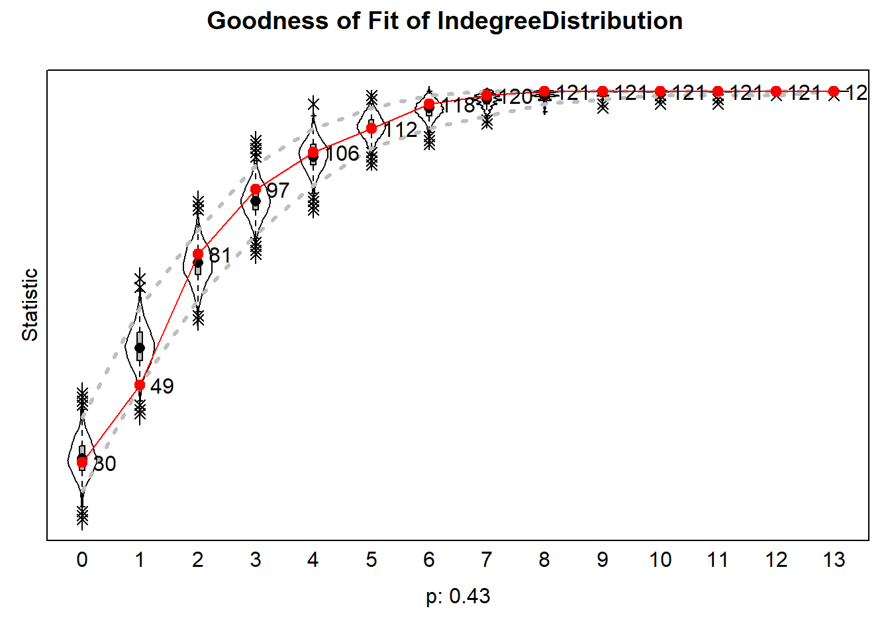
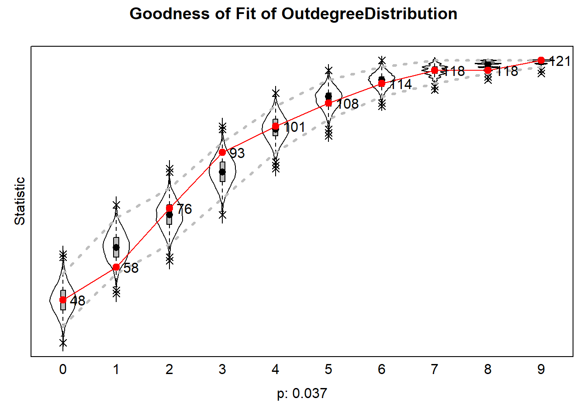
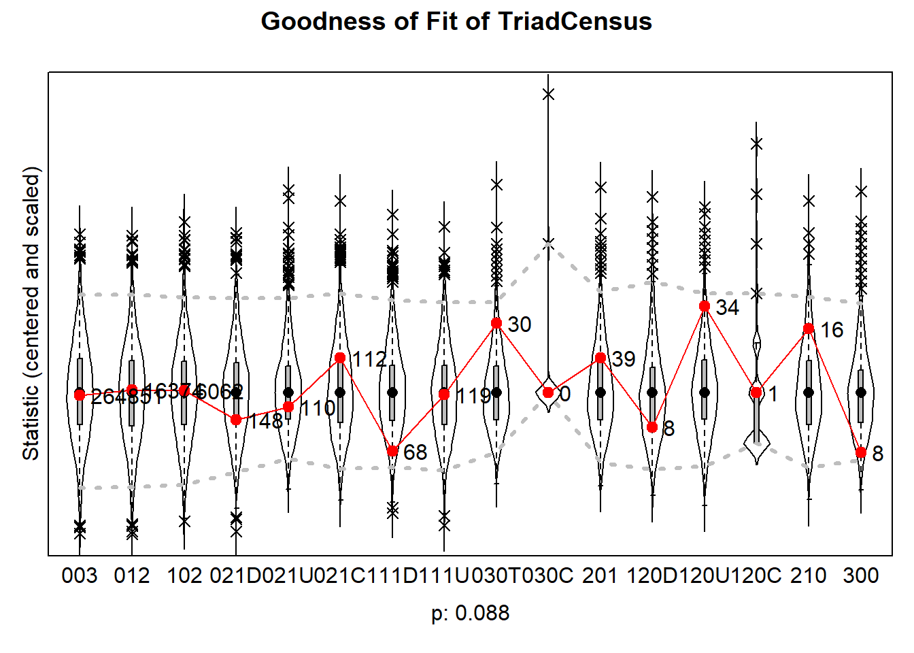
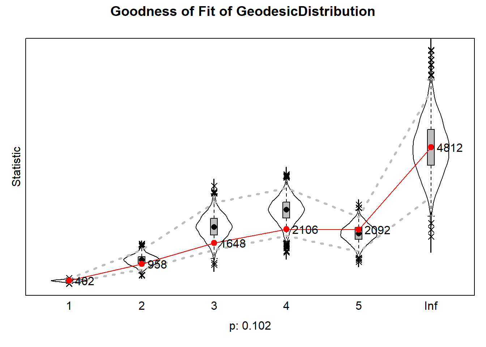
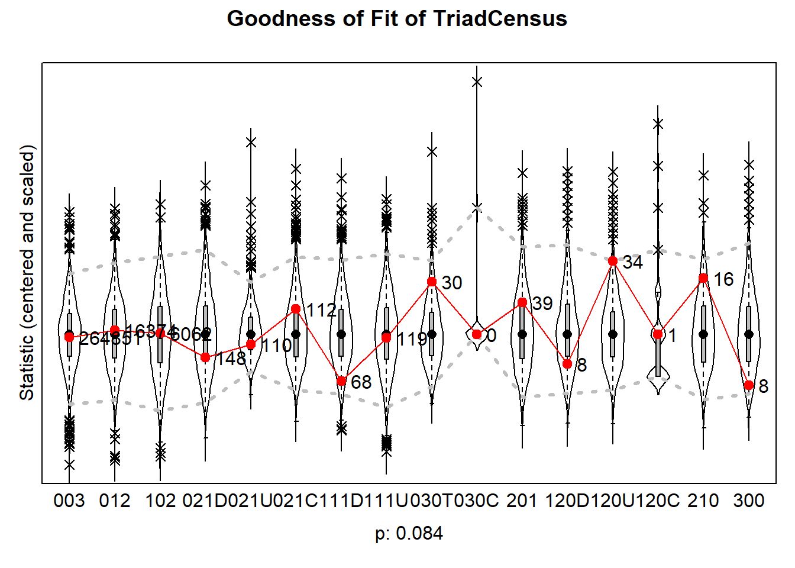
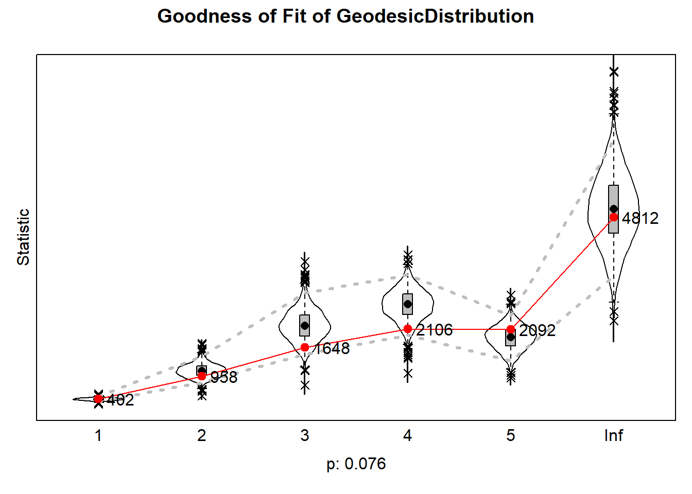
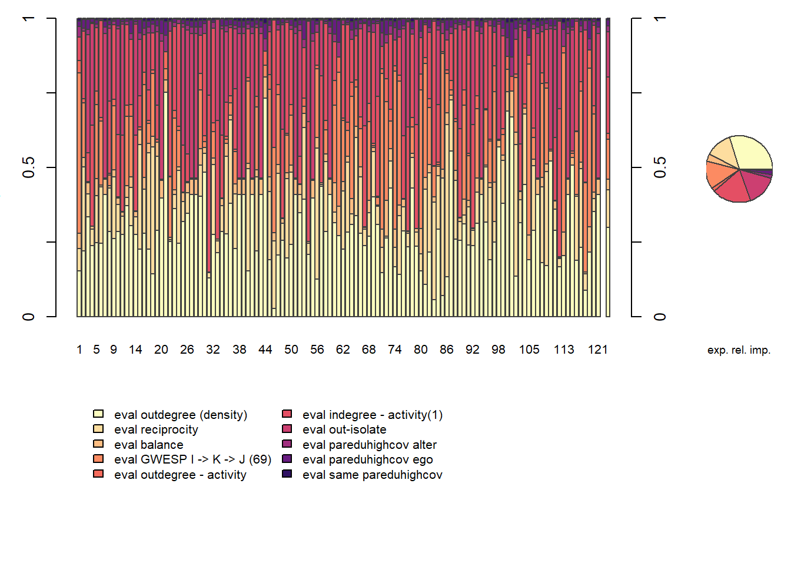

Analyses and Results
Susanna
2026-09-29
rm(list = ls())
#function by Jochem
fpackage.check <- function(packages) {
lapply(packages, FUN = function(x) {
if (!require(x, character.only = TRUE)) {
install.packages(x, dependencies = TRUE)
library(x, character.only = TRUE)
}
})
}
fsave <- function(x, file = NULL, location = "./data/processed/") {
ifelse(!dir.exists("data"), dir.create("data"), FALSE)
ifelse(!dir.exists("data/processed"), dir.create("data/processed"), FALSE)
if (is.null(file))
file = deparse(substitute(x))
datename <- substr(gsub("[:-]", "", Sys.time()), 1, 8)
totalname <- paste(location, datename, file, ".rda", sep = "")
save(x, file = totalname) #need to fix if file is reloaded as input name, not as x.
}
fload <- function(filename) {
load(filename)
get(ls()[ls() != "filename"])
}
fshowdf <- function(x, ...) {
knitr::kable(x, digits = 2, "html", ...) %>%
kableExtra::kable_styling(bootstrap_options = c("striped", "hover")) %>%
kableExtra::scroll_box(width = "100%", height = "300px")
}
colorize <- function(x, color) {
sprintf("<span style='color: %s;'>%s</span>", color, x)
}
packages <- c("sna","ape", "network", "devtools", "igraph", "RSiena", "tidyverse", "stringdist", "stringi", "lattice")
lapply(packages, require, character.only=T)## Loading required package: sna## Warning: package 'sna' was built under R version 4.5.3## Loading required package: statnet.common## Warning: package 'statnet.common' was built under R version 4.5.3##
## Attaching package: 'statnet.common'## The following objects are masked from 'package:base':
##
## attr, order, replace## Loading required package: network## Warning: package 'network' was built under R version 4.5.3##
## 'network' 1.20.0 (2026-02-06), part of the Statnet Project
## * 'news(package="network")' for changes since last version
## * 'citation("network")' for citation information
## * 'https://statnet.org' for help, support, and other information## sna: Tools for Social Network Analysis
## Version 2.8 created on 2024-09-07.
## copyright (c) 2005, Carter T. Butts, University of California-Irvine
## For citation information, type citation("sna").
## Type help(package="sna") to get started.## Loading required package: ape## Warning: package 'ape' was built under R version 4.5.3##
## Attaching package: 'ape'## The following objects are masked from 'package:sna':
##
## consensus, degree## Loading required package: devtools## Warning: package 'devtools' was built under R version 4.5.3## Loading required package: usethis## Warning: package 'usethis' was built under R version 4.5.3## Loading required package: igraph## Warning: package 'igraph' was built under R version 4.5.3##
## Attaching package: 'igraph'## The following objects are masked from 'package:ape':
##
## degree, edges, mst, ring## The following objects are masked from 'package:sna':
##
## betweenness, bonpow, closeness, components, degree, dyad.census,
## evcent, hierarchy, is.connected, neighborhood, triad.census## The following objects are masked from 'package:network':
##
## %c%, %s%, add.edges, add.vertices, delete.edges, delete.vertices,
## get.edge.attribute, get.edges, get.vertex.attribute, is.bipartite,
## is.directed, list.edge.attributes, list.vertex.attributes,
## set.edge.attribute, set.vertex.attribute## The following objects are masked from 'package:stats':
##
## decompose, spectrum## The following object is masked from 'package:base':
##
## union## Loading required package: RSiena## Warning: package 'RSiena' was built under R version 4.5.3## Loading required package: tidyverse## Warning: package 'tidyverse' was built under R version 4.5.3## Warning: package 'tibble' was built under R version 4.5.3## Warning: package 'tidyr' was built under R version 4.5.3## Warning: package 'readr' was built under R version 4.5.2## Warning: package 'dplyr' was built under R version 4.5.3## Warning: package 'stringr' was built under R version 4.5.3## Warning: package 'forcats' was built under R version 4.5.2## ── Attaching core tidyverse packages ────────────
## ✔ dplyr 1.2.1 ✔ readr 2.1.6
## ✔ forcats 1.0.1 ✔ stringr 1.6.0
## ✔ ggplot2 4.0.0 ✔ tibble 3.3.1
## ✔ lubridate 1.9.4 ✔ tidyr 1.3.2
## ✔ purrr 1.1.0## ── Conflicts ─────────── tidyverse_conflicts() ──
## ✖ lubridate::%--%() masks igraph::%--%()
## ✖ dplyr::as_data_frame() masks tibble::as_data_frame(), igraph::as_data_frame()
## ✖ purrr::compose() masks igraph::compose()
## ✖ tidyr::crossing() masks igraph::crossing()
## ✖ dplyr::filter() masks stats::filter()
## ✖ dplyr::lag() masks stats::lag()
## ✖ purrr::simplify() masks igraph::simplify()
## ✖ dplyr::where() masks ape::where()
## ℹ Use the conflicted package (<http://conflicted.r-lib.org/>) to force all conflicts to become errors
## Loading required package: stringdist## Warning: package 'stringdist' was built under R version 4.5.2##
## Attaching package: 'stringdist'
##
## The following object is masked from 'package:tidyr':
##
## extract
##
## Loading required package: stringi## Warning: package 'stringi' was built under R version 4.5.3## Loading required package: lattice## [[1]]
## [1] TRUE
##
## [[2]]
## [1] TRUE
##
## [[3]]
## [1] TRUE
##
## [[4]]
## [1] TRUE
##
## [[5]]
## [1] TRUE
##
## [[6]]
## [1] TRUE
##
## [[7]]
## [1] TRUE
##
## [[8]]
## [1] TRUE
##
## [[9]]
## [1] TRUE
##
## [[10]]
## [1] TRUEload("./data/EduBridgeforRSiena.RData")1 Descriptive Statistics
1.1 Sample Description
The sample contained a total of 121 students, 67.8% of which had at least one parent/caregiver with a college diploma. 9.7% of the students came from an educationally mixed family, e.g. one parent/caregiver with and one parent/caregiver without a college diploma. Women made up 65.3% of the sample. The majority of the students identified as Asian, followed by white students.
summary(parenteduhigh) #mean = 0.678## Min. 1st Qu. Median Mean 3rd Qu. Max. NA's
## 0.000 0.000 1.000 0.678 1.000 1.000 3summary(parentedudif) #mean = 0.09735## Min. 1st Qu. Median Mean 3rd Qu. Max. NA's
## 0.00000 0.00000 0.00000 0.09735 0.00000 1.00000 8summary(gendernew) #mean = 0.6529## Min. 1st Qu. Median Mean 3rd Qu. Max.
## 0.0000 0.0000 1.0000 0.6529 1.0000 1.0000histogram(ethnew, col = "mediumorchid4")
1.2 Visualisation
hangingt1nona <- hanging_df_t1
hangingt1nona[hangingt1nona==9]<- 0
hangingt1nona <- as.matrix(hangingt1nona)
hangingt1 <- graph_from_adjacency_matrix(hangingt1nona, mode = "directed", weighted = NULL, diag = TRUE, add.colnames = NA, add.rownames = NA)
hangingt2nona <- hanging_df_t2
hangingt2nona[hangingt2nona==9]<- 0
hangingt2nona <- as.matrix(hangingt2nona)
hangingt2 <- graph_from_adjacency_matrix(hangingt2nona, mode = "directed", weighted = NULL, diag = TRUE, add.colnames = NA, add.rownames = NA)
rangegray <- colorRampPalette(c("grey91", "grey50", "grey30", "black"))
nbins <- 5
colourbetweenness <-rangegray(nbins)
colourpareduhigh <- ifelse(is.na(parenteduhigh), "white", ifelse(parentedudif==1, "mediumorchid4", ifelse(parenteduhigh==1, "#3A87AD", "lightgoldenrod")))
colourparedudif <- ifelse(is.na(parentedudif), "grey91", ifelse(parentedudif==1, "mediumorchid4", "grey91"))
layoutfr2 <- layout.fruchterman.reingold(hangingt2)## Warning: `layout.fruchterman.reingold()` was deprecated
## in igraph 2.1.0.
## ℹ Please use `layout_with_fr()` instead.
## This warning is displayed once per session.
## Call `lifecycle::last_lifecycle_warnings()` to
## see where this warning was generated.layoutdh2 <- igraph:: layout_with_dh(hangingt2)
V(hangingt1)$size = igraph::degree(hangingt1) * 0.4 + 7
V(hangingt2)$size = igraph::degree(hangingt2) * 0.4 + 7
{png("plot2.png", width = 14, height = 7, units = "in", res = 300)
par(mfrow = c(1, 2))
plot(hangingt1,
vertex.color = adjustcolor(colourpareduhigh, alpha.f = .5),
vertex.frame.color = colourparedudif,
vertex.frame.width = 2,
vertex.label = NA,
edge.curved = 0.2,
edge.arrow.size = 0.2,
edge.color = colourbetweenness[cut(igraph::edge_betweenness(hangingt1), breaks=nbins )],
layout = layoutfr2,
main = "Wave 1")
legend("topleft", c("university", "no university", "mixed", "missing"), pch = 21, col = "grey91", pt.bg = c("#3A87AD", "lightgoldenrod", "mediumorchid4", "white"), pt.cex = 1,
cex = 0.8, bty = "n", ncol = 1)
plot(hangingt2,
vertex.color = adjustcolor(colourpareduhigh, alpha.f = .5),
vertex.frame.color = colourparedudif,
vertex.frame.width = 2,
vertex.label = NA,
edge.curved = 0.2,
edge.arrow.size = 0.2,
edge.color = colourbetweenness[cut(igraph::edge_betweenness(hangingt2), breaks=nbins )],
layout = layoutfr2,
main = "Wave 2")
dev.off()}## png
## 2knitr::include_graphics("plot2.png")
Note: Nodes were distributed in the graph based on the Fruchterman-Reingold forcedirected algorithm, which models repulsion between nodes and attraction between nodes that are connected. The nodes were fixed in their w2 location for both waves to visualise changes in specific ties. Node size indicates degree, darkness of ties indicates betweenness.
Before investigating whether the hypothesised effects are significant in individual students’ tie-making and -breaking, it is important to understand the observable dynamics within the network. For this purpose, I first explore the descriptive statistics in both waves. I start with descriptives related to the evolution of ties, density, and pathlength, then I discuss triad configurations within the network, before finally calculating segregation based on parental educational attainment to answer research question 1.
1.3 Tie evolution
dyad_census(hangingt1)## $mut
## [1] 93
##
## $asym
## [1] 209
##
## $null
## [1] 6958dyad_census(hangingt2)## $mut
## [1] 60
##
## $asym
## [1] 150
##
## $null
## [1] 7050edge_density(hangingt1)## [1] 0.02720386edge_density(hangingt2)## [1] 0.01859504Between wave 1 and wave 2, we can observe a substantial reduction in the number of ties within students’ hanging out network. While in the first wave, a total number of 302 pairs were connected, 93 of which were reciprocal connections, by the second wave, only 210 connections remain. This entails a drop of 30.5% of the initial number of dyads. This is reflected in density, which is low in both networks, but also drops substantially between waves (from 0.027 to 0.019). This is also observable in the above figure: many ties are broken between wave 1 and wave 2. The evolution of hanging out networks in this community of university students is thus strongly shaped by endowment, i.e. the decision to maintain or break a tie. Investigating homophily effects in endowment specifically is therefore particularly relevant for this context.
degdis1 <- degree_distribution(hangingt1, cumulative = FALSE)
library(lattice)
barplot(degdis1, xlab = "Degree", ylab = "Share of Total (Decimal)", names.arg = 1:23, col = "mediumorchid4")
degdis2 <- degree_distribution(hangingt2, cumulative = FALSE)
barplot(degdis2, xlab = "Degree", ylab = "Share of Total (Decimal)", names.arg = 1:20, col = "mediumorchid4")
mean_distance(hangingt1, directed = T, unconnected = T, details = T)## $res
## [1] 4.840779
##
## $unconnected
## [1] 8566mean_distance(hangingt2, directed = T, unconnected = T, details = T)## $res
## [1] 4.591732
##
## $unconnected
## [1] 11593Surprisingly, the average shortest path length between vectors, not counting isolates, decreases from 4.84 in the first wave to 4.59 in the second wave - despite the reduction in the total number of connected pairs. This may be explained by the presence of several efficient brokers between clusters, visible in the wave 2 network depiction.
hangingt1m <- as.matrix(hanging_df_t1)
hangingt2m <- as.matrix(hanging_df_t2)
sna::triad.census(hangingt1m)## 003 012 102 021D 021U 021C 111D 111U 030T 030C 201 120D 120U 120C
## [1,] 185654 19612 9095 62226 231 208 247 920 2244 2 92 1046 6048 13
## 210 300
## [1,] 134 208sna::triad.census(hangingt2m)## 003 012 102 021D 021U 021C 111D 111U 030T 030C 201 120D 120U 120C
## [1,] 206607 14432 6184 53311 117 112 88 1050 1256 0 54 538 4019 13
## 210 300
## [1,] 102 97Between both waves, we can observe a reduction in all triad types except for the 111U constellation, which raises from occurring 920 times to occurring 1050 times, and the 120C constellation, which remains constant. This observed reduction in most tryad compositions is likely another consequence of the overall reduction in ties.
1.4 Segregation
To answer the first research question, I calculate Moran’s I, a spatial autocorrelation measure used to indicate whether nodes that are closer to one another are more alike. Under the null hypothesis of no segregation, the expected value of I is -1/(N-1). An observed I larger than the expected indicates positive autocorrelation, an observed I smaller than the expected indicates negative autocorrelation (the opposite of segregation) (Di Salvatore and Ruggeri 2021). As I am interested in selection processes, I use a distance decay function of 1, i.e. I test whether students who are directly connected are more similar in their parents’ highest educational attainment. I do not rowstandardise, since rowstandardising would treat a student connected to only one peer with a different educational heritage and no others the same as it would a student connected to several such peers and no others.
hangingt1m <- as.matrix(hanging_df_t1)
hangingt2m <- as.matrix(hanging_df_t2)
# step 1: calculate distances
geodistances <- geodist(hangingt1m, count.paths = TRUE)
geodistances <- geodistances$gdist
# set the distance to yourself as Inf
diag(geodistances) <- Inf
# step 2: define a distance decay function. This one is pretty standard in the spatial autocorrelation literature but actually pretty arbitrary.
weights1 <- geodistances == 1
weights2 <- exp(-geodistances)#Jochem's formula for Moran's I
fMoran.I <- function(x, weight, scaled = FALSE, na.rm = FALSE, alternative = "two.sided", rowstandardize = TRUE) {
if (rowstandardize) {
if (dim(weight)[1] != dim(weight)[2])
stop("'weight' must be a square matrix")
n <- length(x)
if (dim(weight)[1] != n)
stop("'weight' must have as many rows as observations in 'x'")
ei <- -1/(n - 1)
nas <- is.na(x)
if (any(nas)) {
if (na.rm) {
x <- x[!nas]
n <- length(x)
weight <- weight[!nas, !nas]
} else {
warning("'x' has missing values: maybe you wanted to set na.rm = TRUE?")
return(list(observed = NA, expected = ei, sd = NA, p.value = NA))
}
}
ROWSUM <- rowSums(weight)
ROWSUM[ROWSUM == 0] <- 1
weight <- weight/ROWSUM
s <- sum(weight)
m <- mean(x)
y <- x - m
cv <- sum(weight * y %o% y)
v <- sum(y^2)
obs <- (n/s) * (cv/v)
if (scaled) {
i.max <- (n/s) * (sd(rowSums(weight) * y)/sqrt(v/(n - 1)))
obs <- obs/i.max
}
S1 <- 0.5 * sum((weight + t(weight))^2)
S2 <- sum((apply(weight, 1, sum) + apply(weight, 2, sum))^2)
s.sq <- s^2
k <- (sum(y^4)/n)/(v/n)^2
sdi <- sqrt((n * ((n^2 - 3 * n + 3) * S1 - n * S2 + 3 * s.sq) - k * (n * (n - 1) * S1 - 2 * n *
S2 + 6 * s.sq))/((n - 1) * (n - 2) * (n - 3) * s.sq) - 1/((n - 1)^2))
alternative <- match.arg(alternative, c("two.sided", "less", "greater"))
pv <- pnorm(obs, mean = ei, sd = sdi)
if (alternative == "two.sided")
pv <- if (obs <= ei)
2 * pv else 2 * (1 - pv)
if (alternative == "greater")
pv <- 1 - pv
list(observed = obs, expected = ei, sd = sdi, p.value = pv)
} else {
if (dim(weight)[1] != dim(weight)[2])
stop("'weight' must be a square matrix")
n <- length(x)
if (dim(weight)[1] != n)
stop("'weight' must have as many rows as observations in 'x'")
ei <- -1/(n - 1)
nas <- is.na(x)
if (any(nas)) {
if (na.rm) {
x <- x[!nas]
n <- length(x)
weight <- weight[!nas, !nas]
} else {
warning("'x' has missing values: maybe you wanted to set na.rm = TRUE?")
return(list(observed = NA, expected = ei, sd = NA, p.value = NA))
}
}
# ROWSUM <- rowSums(weight) ROWSUM[ROWSUM == 0] <- 1 weight <- weight/ROWSUM
s <- sum(weight)
m <- mean(x)
y <- x - m
cv <- sum(weight * y %o% y)
v <- sum(y^2)
obs <- (n/s) * (cv/v)
if (scaled) {
i.max <- (n/s) * (sd(rowSums(weight) * y)/sqrt(v/(n - 1)))
obs <- obs/i.max
}
S1 <- 0.5 * sum((weight + t(weight))^2)
S2 <- sum((apply(weight, 1, sum) + apply(weight, 2, sum))^2)
s.sq <- s^2
k <- (sum(y^4)/n)/(v/n)^2
sdi <- sqrt((n * ((n^2 - 3 * n + 3) * S1 - n * S2 + 3 * s.sq) - k * (n * (n - 1) * S1 - 2 * n *
S2 + 6 * s.sq))/((n - 1) * (n - 2) * (n - 3) * s.sq) - 1/((n - 1)^2))
alternative <- match.arg(alternative, c("two.sided", "less", "greater"))
pv <- pnorm(obs, mean = ei, sd = sdi)
if (alternative == "two.sided")
pv <- if (obs <= ei)
2 * pv else 2 * (1 - pv)
if (alternative == "greater")
pv <- 1 - pv
list(observed = obs, expected = ei, sd = sdi, p.value = pv)
}
}fMoran.I(parenteduhigh, scaled = FALSE, weight = weights1, na.rm = TRUE, rowstandardize = FALSE)## $observed
## [1] -0.005732169
##
## $expected
## [1] -0.008333333
##
## $sd
## [1] 0.01484742
##
## $p.value
## [1] 0.860928# step 1: calculate distances
geodistances2 <- geodist(hangingt2m, count.paths = TRUE)
geodistances2 <- geodistances2$gdist
# set the distance to yourself as Inf
diag(geodistances2) <- Inf
# step 2: define a distance decay function. This one is pretty standard in the spatial autocorrelation literature but actually pretty arbitrary.
weights3 <- exp(-geodistances2)
fMoran.I(parenteduhigh, scaled = FALSE, weight = weights3, na.rm = TRUE, rowstandardize = FALSE)## $observed
## [1] -0.01137761
##
## $expected
## [1] -0.008333333
##
## $sd
## [1] 0.00920677
##
## $p.value
## [1] 0.740904There is no evidence for segregation based on parental educational levels in either wave, indicating that across the entire network, students that hang out together are not necessarily more similar regarding the highest educational attainment among their parent(s)/caregiver(s). However, it is possible for the overall segregation to be insignificant while segregation does occur within specific clusters, in this case friend groups (Di Salvatore and Ruggeri 2021). Additionally, other network effects such as meeting opportunities through mutual friends may account for the lack of observed segregation. To answer research question two and three, it is therefore necessary to model students’ individual evaluation functions.
1.5 Students with a Mixed Background
The figure below highlights students from educationally mixed families, with size indicating betweenness. Students with a mixed background do not demonstrate higher betweenness scores than their peers. However, betweennes itself cannot provide conclusive evidence in favour of the hypothesis either way, as it is specifically the amount of shortest paths from first-generation to continuing-generation students that pass through those with a mixed background that I would be interested in, not paths between any pair of students. From the network visualisation alone, it is difficult to assess whether students with a mixed background have more diverse ties. Instead of fixing students in their wave two places, this figure determines locations based on students’s ties within each specific ties. It stands out that students with a mixed background in particular shift their position in the social network between wave one and wave two. While these students initially seem to be rather isolated, by wave two, they have formed new ties with both first- and continuing-generation students. This may suggest that students from an educationally mixed household are indeed a third group, who face initial challenges in forming ties, but create more diverse relations over time. To test this and the other hypotheses, I will proceed with creating stochastic actor-oriented models.
V(hangingt1)$size = igraph::betweenness(hangingt1, normalized = T, directed = TRUE) * 70 + 7
V(hangingt2)$size = igraph::betweenness(hangingt2, normalized = T, directed = TRUE) * 70 + 7
layoutfr1 <- layout.fruchterman.reingold(hangingt1)
{png("plot3.png", width = 14, height = 7, units = "in", res = 300)
par(mfrow = c(1, 2))
plot(hangingt1,
vertex.color = adjustcolor(colourpareduhigh, alpha.f = .5),
vertex.frame.color = colourparedudif,
vertex.frame.width = 2,
vertex.label = NA,
edge.curved = 0.2,
edge.arrow.size = 0.2,
edge.color = colourbetweenness[cut(igraph::edge_betweenness(hangingt1), breaks=nbins )],
layout = layoutfr1,
main = "Wave 1")
legend("topleft", c("university", "no university", "mixed", "missing"), pch = 21, col = "grey91", pt.bg = c("#3A87AD", "lightgoldenrod", "mediumorchid4", "white"), pt.cex = 1,
cex = 0.8, bty = "n", ncol = 1)
plot(hangingt2,
vertex.color = adjustcolor(colourpareduhigh, alpha.f = .5),
vertex.frame.color = colourparedudif,
vertex.frame.width = 2,
vertex.label = NA,
edge.curved = 0.2,
edge.arrow.size = 0.2,
edge.color = colourbetweenness[cut(igraph::edge_betweenness(hangingt2), breaks=nbins )],
layout = layoutfr2,
main = "Wave 2")
dev.off()}## png
## 2knitr::include_graphics("plot3.png")
2 Explanatory Analysis
2.1 Model input preparation
2.1.1 Network in waves
#wave 1 = hangingt1, wave 2 = hangingt2
hangingt1m <- as.matrix(hanging_df_t1)
hangingt2m <- as.matrix(hanging_df_t2)
#diagonals to zero
diag(hangingt1m) <- 0
diag(hangingt2m) <- 0
#missings to NA
hangingt1mwna <- hangingt1m
hangingt1mwna[hangingt1mwna == 9] <- NA
hangingt2mwna <- hangingt2m
hangingt2mwna[hangingt2mwna == 9] <- NA
#nets into array
hanging_array <- array(data = c(hangingt1mwna, hangingt2mwna), dim = c(dim(hangingt1mwna), 2))
#dependent
net <- sienaDependent(hanging_array)2.1.2 Covariates: parenteduhigh, parentedudif, ethnew, gendernew
gendercov <- coCovar(gendernew) #constant covariate
ethcov <- coCovar(ethnew)
paredudifcov <- coCovar(parentedudif)
pareduhighcov <- coCovar(parenteduhigh)
mydata <- sienaDataCreate(net, gendercov, ethcov, paredudifcov, pareduhighcov)2.1.3 Overview of Siena data
write_report(mydata, outputName = "sienaData")## Basic data description written to text file sienaData.txt. ************************
sienaData.txt
************************Filename is sienaData.txt.
This file contains basic descriptives for SIENA data set
<
Date and time: 29/10/2026 20:04:36
RSiena version 1.6.6 (20 04 2026)
(1?) Data input. ===========
2 observations, 121 actors, 1 dependent network variables, 0 dependent bipartite variables, 0 dependent discrete behavior variables, 0 dependent continuous behavior variables, 4 constant actor covariates, 0 exogenous changing actor covariates, 0 constant dyadic covariates, 0 exogenous changing dyadic covariates, 0 no files with times of composition change.
(2?) Reading network variables. ————————–
Name of network variable: net. oneMode network. For observation moment 1, degree distributions are as follows: Nodes 1 2 3 4 5 6 7 8 9 10 11 12 13 14 15 16 17 18 19 20 21 22 23 24 25 26 27 28 29 30 31 32 33 34 35 36 37 38 39 40 41 42 43 44 45 46 47 48 49 50 51 52 53 54 55 56 57 58 59 60 61 62 63 64 65 66 67 68 69 70 71 72 73 74 75 76 77 78 79 80 81 82 83 84 85 86 87 88 89 90 91 92 93 94 95 96 97 98 99 100 101 102 103 104 105 106 107 108 109 110 111 112 113 114 115 116 117 118 119 120 121 out-degrees 6 2 1 1 8 7 0 1 7 0 0 9 4 0 1 4 1 2 1 0 3 3 5 8 3 0 0 0 6 4 9 7 0 0 1 3 1 0 0 2 0 6 0 2 7 9 5 0 7 7 0 0 2 0 0 2 1 8 0 8 4 6 6 4 2 7 7 7 3 1 2 8 5 2 3 2 0 3 0 8 4 5 9 1 2 2 3 2 7 7 10 0 5 0 3 9 10 1 3 2 2 2 0 2 3 8 0 5 3 1 0 0 2 0 1 3 4 8 6 6 0 in-degrees 3 6 1 7 3 6 0 3 4 3 4 3 2 4 1 1 1 3 1 0 0 7 4 9 2 1 0 0 1 3 10 7 9 3 1 2 3 0 0 7 0 6 0 0 2 11 3 6 8 6 0 1 1 7 0 3 4 6 0 1 0 6 8 1 1 6 7 5 4 5 1 1 2 1 3 3 8 2 6 2 6 5 13 2 3 2 1 7 6 2 6 7 2 0 4 8 1 0 3 0 0 3 2 2 0 8 0 2 5 1 3 9 0 0 0 6 2 9 0 3 0
For observation moment 1, number of missing values are: Nodes 1 2 3 4 5 6 7 8 9 10 11 12 13 14 15 16 17 18 19 20 21 22 23 24 25 26 27 28 29 30 31 32 33 34 35 36 37 38 39 40 41 42 43 44 45 46 47 48 49 50 51 52 53 54 55 56 57 58 59 60 61 62 63 64 65 66 67 68 69 70 71 72 73 74 75 76 77 78 79 80 81 82 83 84 85 86 87 88 89 90 91 92 93 94 95 96 97 98 99 100 101 102 103 104 105 106 107 108 109 110 111 112 113 114 115 116 117 118 119 120 121 missing in rows 0 0 0 0 0 0 120 0 0 0 0 0 0 0 0 0 0 0 0 0 0 0 0 0 0 0 0 0 0 0 0 0 0 0 0 0 0 120 120 0 120 0 0 0 0 0 0 0 0 0 120 0 0 0 120 0 0 0 120 0 0 0 0 0 0 0 0 0 0 0 0 0 0 0 0 0 0 0 0 0 0 0 0 0 0 0 0 0 0 0 0 120 0 120 0 0 0 0 0 0 0 0 0 0 0 0 120 0 0 0 0 0 0 120 0 0 0 0 0 0 0 missing in columns 11 11 11 11 11 11 10 11 11 11 11 11 11 11 11 11 11 11 11 11 11 11 11 11 11 11 11 11 11 11 11 11 11 11 11 11 11 10 10 11 10 11 11 11 11 11 11 11 11 11 10 11 11 11 10 11 11 11 10 11 11 11 11 11 11 11 11 11 11 11 11 11 11 11 11 11 11 11 11 11 11 11 11 11 11 11 11 11 11 11 11 10 11 10 11 11 11 11 11 11 11 11 11 11 11 11 10 11 11 11 11 11 11 10 11 11 11 11 11 11 11 Total number of missing data: 1320, corresponding to a fraction of 0.091.
For observation moment 2, degree distributions are as follows: Nodes 1 2 3 4 5 6 7 8 9 10 11 12 13 14 15 16 17 18 19 20 21 22 23 24 25 26 27 28 29 30 31 32 33 34 35 36 37 38 39 40 41 42 43 44 45 46 47 48 49 50 51 52 53 54 55 56 57 58 59 60 61 62 63 64 65 66 67 68 69 70 71 72 73 74 75 76 77 78 79 80 81 82 83 84 85 86 87 88 89 90 91 92 93 94 95 96 97 98 99 100 101 102 103 104 105 106 107 108 109 110 111 112 113 114 115 116 117 118 119 120 121 out-degrees 3 2 0 0 4 3 7 2 5 0 0 7 3 0 2 2 2 4 1 1 0 6 0 3 0 0 1 0 0 0 0 0 0 0 0 2 1 0 1 3 0 6 2 2 5 9 5 5 3 7 0 0 2 0 2 2 0 0 0 5 2 3 6 2 2 0 0 4 4 0 0 6 7 0 3 0 0 2 0 1 0 3 9 1 3 0 1 0 0 4 3 0 7 0 9 6 3 3 2 0 0 2 4 1 5 5 2 4 2 2 1 6 3 3 0 3 3 1 4 3 0 in-degrees 2 2 0 5 1 2 5 2 2 0 1 4 2 0 1 1 1 2 1 0 0 5 0 6 4 0 0 1 3 2 0 4 8 2 0 2 4 3 2 3 5 3 0 0 2 5 3 3 3 2 4 0 2 7 0 0 2 5 1 1 2 2 4 0 2 3 0 0 3 2 0 2 2 0 3 0 6 2 3 2 2 3 10 2 2 1 2 3 0 1 6 0 2 1 7 6 3 0 2 0 1 2 4 2 2 4 0 1 5 0 0 3 0 2 0 6 2 5 6 2 1
For observation moment 2, number of missing values are: Nodes 1 2 3 4 5 6 7 8 9 10 11 12 13 14 15 16 17 18 19 20 21 22 23 24 25 26 27 28 29 30 31 32 33 34 35 36 37 38 39 40 41 42 43 44 45 46 47 48 49 50 51 52 53 54 55 56 57 58 59 60 61 62 63 64 65 66 67 68 69 70 71 72 73 74 75 76 77 78 79 80 81 82 83 84 85 86 87 88 89 90 91 92 93 94 95 96 97 98 99 100 101 102 103 104 105 106 107 108 109 110 111 112 113 114 115 116 117 118 119 120 121 missing in rows 0 0 120 120 0 0 0 0 0 120 0 0 0 0 0 0 0 0 0 0 0 0 0 0 120 0 0 0 0 0 120 0 0 0 0 0 0 0 0 0 0 0 0 0 0 0 0 0 0 0 0 0 0 0 0 0 0 0 0 0 0 0 0 0 0 0 120 0 0 0 0 0 0 0 0 120 0 0 0 0 0 0 0 0 0 0 0 0 120 0 0 120 0 0 0 0 0 0 0 0 0 0 0 0 0 0 0 0 0 0 0 0 0 0 0 0 0 0 0 0 0 missing in columns 9 9 8 8 9 9 9 9 9 8 9 9 9 9 9 9 9 9 9 9 9 9 9 9 8 9 9 9 9 9 8 9 9 9 9 9 9 9 9 9 9 9 9 9 9 9 9 9 9 9 9 9 9 9 9 9 9 9 9 9 9 9 9 9 9 9 8 9 9 9 9 9 9 9 9 8 9 9 9 9 9 9 9 9 9 9 9 9 8 9 9 8 9 9 9 9 9 9 9 9 9 9 9 9 9 9 9 9 9 9 9 9 9 9 9 9 9 9 9 9 9 Total number of missing data: 1080, corresponding to a fraction of 0.074. In reported in- and outdegrees, missings are not counted.
There are missing data for this network variable, and the
<
(2?) Reading constant actor covariates. ———————————-
4 variables, named: gendercov
ethcov
paredudifcov
pareduhighcov
A total of 4 non-changing individual covariates.
Number of missing cases: gendercov 0 ( 0.0 %) ethcov 0 ( 0.0 %) paredudifcov 8 ( 6.6 %) pareduhighcov 3 ( 2.5 %)
Information about covariates: minimum maximum mean centered gendercov 0.0 1.0 0.653 Y ethcov 1.0 6.0 2.471 Y paredudifcov 0.0 1.0 0.097 Y pareduhighcov 0.0 1.0 0.678 Y The mean values are subtracted from the covariates.
There are missing data for network variable net.
For the similarity variable calculated from each actor covariate, the mean is subtracted. These means are: Similarity gendercov : 0.5430 Similarity ethcov : 0.6842 Similarity paredudifcov : 0.8227 Similarity pareduhighcov : 0.5596
(1?) Initial data description. =========================
(2?) Change in networks: ——————-
For the following statistics, missing values (if any) are not counted.
Network density indicators: observation time 1 2 density 0.030 0.020 average degree 3.591 2.411 number of ties 395 270 missing fraction 0.091 0.074
The average degree is 3.001
Tie changes between subsequent observations: periods 0 => 0 0 => 1 1 => 0 1 => 1 Distance Jaccard Missing 1 ==> 2 11766 109 219 146 328 0.308 2280 (16%)
Directed dyad Counts: observation total mutual asymm. null 1. 11990 186 404 11400 2. 12432 120 282 12030
2.2 Standard values for initial parameter values
basic rate parameter net 6.4864 outdegree (density) -1.7006
Initialisation of data set <
2.3 Model 1: Homophily
myeff0910 <- getEffects(mydata)
# effectsDocumentation(myeff0910)ifelse(!dir.exists("results"), dir.create("results"), FALSE)## [1] FALSEprint01Report(mydata, modelname = "./results/edu_bridge")First, I add the recommended relational effects: out-degree activity, in-degree popularity, in-degree activity, reciprocity, and GWESPFF.
myeff <- includeEffects(myeff0910, outAct, inPop, inAct, recip, gwespFF) ## effectNumber effectName shortName include fix test
## 1 18 reciprocity recip TRUE FALSE FALSE
## 2 57 GWESP I -> K -> J (#) gwespFF TRUE FALSE FALSE
## 3 81 indegree - popularity inPop TRUE FALSE FALSE
## 4 118 outdegree - activity outAct TRUE FALSE FALSE
## 5 127 indegree - activity(#) inAct TRUE FALSE FALSE
## initialValue parm
## 1 0 0
## 2 0 69
## 3 0 0
## 4 0 0
## 5 0 1Subsequently, I will introduce homophily as an endowment effect.
myeff <- includeEffects(myeff, sameX, egoX, altX, type = "endow", interaction1 = "pareduhighcov")## effectNumber effectName shortName include fix test initialValue
## 1 818 pareduhighcov alter altX TRUE FALSE FALSE 0
## 2 833 pareduhighcov ego egoX TRUE FALSE FALSE 0
## 3 889 same pareduhighcov sameX TRUE FALSE FALSE 0
## parm type
## 1 0 endow
## 2 0 endow
## 3 0 endowmyeff## effectName include fix test initialValue parm type
## 1 basic rate parameter net TRUE FALSE FALSE 6.48641 0 rate
## 2 outdegree (density) TRUE FALSE FALSE -1.70060 0 eval
## 3 reciprocity TRUE FALSE FALSE 0.00000 0 eval
## 4 GWESP I -> K -> J (#) TRUE FALSE FALSE 0.00000 69 eval
## 5 indegree - popularity TRUE FALSE FALSE 0.00000 0 eval
## 6 outdegree - activity TRUE FALSE FALSE 0.00000 0 eval
## 7 indegree - activity(#) TRUE FALSE FALSE 0.00000 1 eval
## 8 pareduhighcov alter TRUE FALSE FALSE 0.00000 0 endow
## 9 pareduhighcov ego TRUE FALSE FALSE 0.00000 0 endow
## 10 same pareduhighcov TRUE FALSE FALSE 0.00000 0 endowAnd as a creation effect.
myeff <- includeEffects(myeff, sameX, egoX, altX, type = "creation", interaction1 = "pareduhighcov")## effectNumber effectName shortName include fix test initialValue
## 1 819 pareduhighcov alter altX TRUE FALSE FALSE 0
## 2 834 pareduhighcov ego egoX TRUE FALSE FALSE 0
## 3 890 same pareduhighcov sameX TRUE FALSE FALSE 0
## parm type
## 1 0 creation
## 2 0 creation
## 3 0 creationmyeff## effectName include fix test initialValue parm type
## 1 basic rate parameter net TRUE FALSE FALSE 6.48641 0 rate
## 2 outdegree (density) TRUE FALSE FALSE -1.70060 0 eval
## 3 reciprocity TRUE FALSE FALSE 0.00000 0 eval
## 4 GWESP I -> K -> J (#) TRUE FALSE FALSE 0.00000 69 eval
## 5 indegree - popularity TRUE FALSE FALSE 0.00000 0 eval
## 6 outdegree - activity TRUE FALSE FALSE 0.00000 0 eval
## 7 indegree - activity(#) TRUE FALSE FALSE 0.00000 1 eval
## 8 pareduhighcov alter TRUE FALSE FALSE 0.00000 0 endow
## 9 pareduhighcov alter TRUE FALSE FALSE 0.00000 0 creation
## 10 pareduhighcov ego TRUE FALSE FALSE 0.00000 0 endow
## 11 pareduhighcov ego TRUE FALSE FALSE 0.00000 0 creation
## 12 same pareduhighcov TRUE FALSE FALSE 0.00000 0 endow
## 13 same pareduhighcov TRUE FALSE FALSE 0.00000 0 creationmyAlgorithm <- sienaAlgorithmCreate(projname = "edu_bridge",
MaxDegree = c(net = 10),
n3 = 2000,
seed = 30000)## If you use this algorithm object, siena07 will create/use an output file edu_bridge.txt .mod1 <- siena07(myAlgorithm, data = mydata, effects = myeff, returnDeps = TRUE) #mod1 <- saveRDS(mod1, "mod1.rds")
mod1 <- readRDS("mod1.rds")
mod1## Estimates, standard errors and convergence t-ratios
##
## Estimate Standard Convergence
## Error t-ratio
##
## Rate parameters:
## 0 Rate parameter 8.4606 ( 0.7951 )
##
## Other parameters:
## 1. eval outdegree (density) -2.7056 ( 0.2361 ) 0.0476
## 2. eval reciprocity 2.8801 ( 0.3125 ) 0.0083
## 3. eval GWESP I -> K -> J (69) 2.0152 ( 0.2856 ) 0.0465
## 4. eval indegree - popularity -0.0552 ( 0.0443 ) 0.0228
## 5. eval outdegree - activity 0.0799 ( 0.0242 ) 0.0439
## 6. eval indegree - activity(1) -0.3761 ( 0.0914 ) 0.0563
## 7. endow pareduhighcov alter 0.7759 ( 0.3705 ) -0.0227
## 8. creat pareduhighcov alter -0.2164 ( 0.2661 ) -0.0270
## 9. endow pareduhighcov ego 2.8595 ( 5.7330 ) 0.0463
## 10. creat pareduhighcov ego -3.4341 ( 5.6284 ) -0.0171
## 11. endow same pareduhighcov -0.9056 ( 0.3695 ) 0.0112
## 12. creat same pareduhighcov 0.6913 ( 0.3126 ) 0.0477
##
## Overall maximum convergence ratio: 0.1717
##
##
## Degrees constrained to maximum values:
## net : 10
##
##
## Total of 4060 iteration steps.The overall convergence ratio is under .25, which is acceptable. Convergence of individual parameters is also sufficient (absolute values all under 0.1). The rate parameter value is 8.58, indicating that each actor had, on average, 8.58 options for change (‘mini-steps’) within the simulation.
results <- data.frame(
effect = mod1$effects$effectName,
b = mod1$theta,
se = mod1$se,
t = mod1$theta / mod1$se,
p = 2 * pnorm(-abs(mod1$theta / mod1$se)))
pander::pander(results)| effect | b | se | t | p |
|---|---|---|---|---|
| outdegree (density) | -2.706 | 0.2361 | -11.46 | 2.087e-30 |
| reciprocity | 2.88 | 0.3125 | 9.217 | 3.059e-20 |
| GWESP I -> K -> J (69) | 2.015 | 0.2856 | 7.057 | 1.701e-12 |
| indegree - popularity | -0.05516 | 0.04426 | -1.246 | 0.2127 |
| outdegree - activity | 0.07991 | 0.02421 | 3.301 | 0.0009639 |
| indegree - activity(1) | -0.3761 | 0.09142 | -4.114 | 3.895e-05 |
| pareduhighcov alter | 0.7759 | 0.3705 | 2.094 | 0.03625 |
| pareduhighcov alter | -0.2164 | 0.2661 | -0.8132 | 0.4161 |
| pareduhighcov ego | 2.86 | 5.733 | 0.4988 | 0.6179 |
| pareduhighcov ego | -3.434 | 5.628 | -0.6101 | 0.5418 |
| same pareduhighcov | -0.9056 | 0.3695 | -2.451 | 0.01425 |
| same pareduhighcov | 0.6913 | 0.3126 | 2.212 | 0.02699 |
2.3.1 Goodness of Fit
#Jochem's formula for Geodesic Distribution
GeodesicDistribution <- function(i, data, sims, period, groupName, varName, levls = c(1:5, Inf), cumulative = TRUE,
...) {
x <- networkExtraction(i, data, sims, period, groupName, varName)
require(sna)
a <- sna::geodist(symmetrize(x))$gdist
if (cumulative) {
gdi <- sapply(levls, function(i) {
sum(a <= i)
})
} else {
gdi <- sapply(levls, function(i) {
sum(a == i)
})
}
names(gdi) <- as.character(levls)
gdi
}
# The following function is taken from the help page for sienaTest
testall <- function(ans) {
for (i in which(ans$test)) {
sct <- score.Test(ans, i)
cat(ans$requestedEffects$effectName[i], "\n")
print(sct)
}
invisible(score.Test(ans))
}gofinm1 <- sienaGOF(mod1, IndegreeDistribution, verbose = FALSE, join = TRUE, varName = "net", levls = 0:13)
plot(gofinm1)## Note: some statistics are not plotted because their variance is 0.
## This holds for the statistic: 13.
gofoutm1 <- sienaGOF(mod1, OutdegreeDistribution, verbose = FALSE, join = TRUE, varName = "net", levls = 0:10)
plot(gofoutm1)## Note: some statistics are not plotted because their variance is 0.
## This holds for the statistic: 10.
gofgdm1 <- sienaGOF(mod1, GeodesicDistribution, cumulative = FALSE, verbose = FALSE, join = TRUE, varName = "net")
plot(gofgdm1)
goftrim1 <- sienaGOF(mod1, TriadCensus, verbose = FALSE, join = TRUE, varName = "net")
plot(goftrim1, center = TRUE, scale = TRUE)
The simulated networks based on the included effects show reasonable similarity with the observed network in terms of in-degree distribution, geodesic distribution, and triad census. However, the model somewhat underestimates the number of nodes with out-degree 0, and overestimates the number of nodes with out-degree 1. A potential explanation for the higher observed number of nodes with out-degree 0 might be that isolated students are less likely to increase their out-degree. In the following sub-model, I thus include the outIso effect.
2.3.2 (sub)Model 1.1: outIso
myeff1.1 <- includeEffects(myeff, outIso)## effectNumber effectName shortName include fix test initialValue parm
## 1 149 out-isolate outIso TRUE FALSE FALSE 0 1myeff1.1## effectName include fix test initialValue parm type
## 1 basic rate parameter net TRUE FALSE FALSE 6.48641 0 rate
## 2 outdegree (density) TRUE FALSE FALSE -1.70060 0 eval
## 3 reciprocity TRUE FALSE FALSE 0.00000 0 eval
## 4 GWESP I -> K -> J (#) TRUE FALSE FALSE 0.00000 69 eval
## 5 indegree - popularity TRUE FALSE FALSE 0.00000 0 eval
## 6 outdegree - activity TRUE FALSE FALSE 0.00000 0 eval
## 7 indegree - activity(#) TRUE FALSE FALSE 0.00000 1 eval
## 8 out-isolate TRUE FALSE FALSE 0.00000 1 eval
## 9 pareduhighcov alter TRUE FALSE FALSE 0.00000 0 endow
## 10 pareduhighcov alter TRUE FALSE FALSE 0.00000 0 creation
## 11 pareduhighcov ego TRUE FALSE FALSE 0.00000 0 endow
## 12 pareduhighcov ego TRUE FALSE FALSE 0.00000 0 creation
## 13 same pareduhighcov TRUE FALSE FALSE 0.00000 0 endow
## 14 same pareduhighcov TRUE FALSE FALSE 0.00000 0 creation#mod1.1 <- siena07(myAlgorithm, data = mydata, effects = myeff1.1, prevAns = mod1, returnDeps = TRUE) Including the out-degree isolate effect destabilises the estimation procedure, reflected in unrealistically high estimates. I will therefor explore alternative effects that may account for the underestimation of out-isolates.
2.3.3 (sub)Model 1.2: inIsDegree
myeff1.2 <- includeEffects(myeff, inIsDegree)## effectNumber effectName shortName include fix test initialValue
## 1 160 in-isolate Outdegree inIsDegree TRUE FALSE FALSE 0
## parm
## 1 0myeff1.2## effectName include fix test initialValue parm type
## 1 basic rate parameter net TRUE FALSE FALSE 6.48641 0 rate
## 2 outdegree (density) TRUE FALSE FALSE -1.70060 0 eval
## 3 reciprocity TRUE FALSE FALSE 0.00000 0 eval
## 4 GWESP I -> K -> J (#) TRUE FALSE FALSE 0.00000 69 eval
## 5 indegree - popularity TRUE FALSE FALSE 0.00000 0 eval
## 6 outdegree - activity TRUE FALSE FALSE 0.00000 0 eval
## 7 indegree - activity(#) TRUE FALSE FALSE 0.00000 1 eval
## 8 in-isolate Outdegree TRUE FALSE FALSE 0.00000 0 eval
## 9 pareduhighcov alter TRUE FALSE FALSE 0.00000 0 endow
## 10 pareduhighcov alter TRUE FALSE FALSE 0.00000 0 creation
## 11 pareduhighcov ego TRUE FALSE FALSE 0.00000 0 endow
## 12 pareduhighcov ego TRUE FALSE FALSE 0.00000 0 creation
## 13 same pareduhighcov TRUE FALSE FALSE 0.00000 0 endow
## 14 same pareduhighcov TRUE FALSE FALSE 0.00000 0 creation#mod1.2 <- siena07(myAlgorithm, data = mydata, effects = myeff1.2, prevAns = mod1, returnDeps = TRUE)
#mod1.2Including inIsDegree also destabilises the model. Parameter estimates rise to unrealistically high values, with large standard errors and individual convergence ratios way above 0.1. The maximum covergence ratio is absolutely unacceptable at 22.8.
2.3.4 (sub)Model 1.3: removing inPop
In model 1, the in-degree popularity was not significant. As this effect is not of theoretical interest, and reducing complexity can aid convergence and fit, I will remove the effect from the model.
myeff1.3 <- includeEffects(myeff0910, outAct, inAct, recip, gwespFF) ## effectNumber effectName shortName include fix test
## 1 18 reciprocity recip TRUE FALSE FALSE
## 2 57 GWESP I -> K -> J (#) gwespFF TRUE FALSE FALSE
## 3 118 outdegree - activity outAct TRUE FALSE FALSE
## 4 127 indegree - activity(#) inAct TRUE FALSE FALSE
## initialValue parm
## 1 0 0
## 2 0 69
## 3 0 0
## 4 0 1myeff1.3## effectName include fix test initialValue parm
## 1 basic rate parameter net TRUE FALSE FALSE 6.48641 0
## 2 outdegree (density) TRUE FALSE FALSE -1.70060 0
## 3 reciprocity TRUE FALSE FALSE 0.00000 0
## 4 GWESP I -> K -> J (#) TRUE FALSE FALSE 0.00000 69
## 5 outdegree - activity TRUE FALSE FALSE 0.00000 0
## 6 indegree - activity(#) TRUE FALSE FALSE 0.00000 1myeff1.3 <- includeEffects(myeff1.3, sameX, egoX, altX, type = "endow", interaction1 = "pareduhighcov")## effectNumber effectName shortName include fix test initialValue
## 1 818 pareduhighcov alter altX TRUE FALSE FALSE 0
## 2 833 pareduhighcov ego egoX TRUE FALSE FALSE 0
## 3 889 same pareduhighcov sameX TRUE FALSE FALSE 0
## parm type
## 1 0 endow
## 2 0 endow
## 3 0 endowmyeff1.3## effectName include fix test initialValue parm type
## 1 basic rate parameter net TRUE FALSE FALSE 6.48641 0 rate
## 2 outdegree (density) TRUE FALSE FALSE -1.70060 0 eval
## 3 reciprocity TRUE FALSE FALSE 0.00000 0 eval
## 4 GWESP I -> K -> J (#) TRUE FALSE FALSE 0.00000 69 eval
## 5 outdegree - activity TRUE FALSE FALSE 0.00000 0 eval
## 6 indegree - activity(#) TRUE FALSE FALSE 0.00000 1 eval
## 7 pareduhighcov alter TRUE FALSE FALSE 0.00000 0 endow
## 8 pareduhighcov ego TRUE FALSE FALSE 0.00000 0 endow
## 9 same pareduhighcov TRUE FALSE FALSE 0.00000 0 endowmyeff1.3 <- includeEffects(myeff1.3, sameX, egoX, altX, type = "creation", interaction1 = "pareduhighcov")## effectNumber effectName shortName include fix test initialValue
## 1 819 pareduhighcov alter altX TRUE FALSE FALSE 0
## 2 834 pareduhighcov ego egoX TRUE FALSE FALSE 0
## 3 890 same pareduhighcov sameX TRUE FALSE FALSE 0
## parm type
## 1 0 creation
## 2 0 creation
## 3 0 creationmyeff1.3## effectName include fix test initialValue parm type
## 1 basic rate parameter net TRUE FALSE FALSE 6.48641 0 rate
## 2 outdegree (density) TRUE FALSE FALSE -1.70060 0 eval
## 3 reciprocity TRUE FALSE FALSE 0.00000 0 eval
## 4 GWESP I -> K -> J (#) TRUE FALSE FALSE 0.00000 69 eval
## 5 outdegree - activity TRUE FALSE FALSE 0.00000 0 eval
## 6 indegree - activity(#) TRUE FALSE FALSE 0.00000 1 eval
## 7 pareduhighcov alter TRUE FALSE FALSE 0.00000 0 endow
## 8 pareduhighcov alter TRUE FALSE FALSE 0.00000 0 creation
## 9 pareduhighcov ego TRUE FALSE FALSE 0.00000 0 endow
## 10 pareduhighcov ego TRUE FALSE FALSE 0.00000 0 creation
## 11 same pareduhighcov TRUE FALSE FALSE 0.00000 0 endow
## 12 same pareduhighcov TRUE FALSE FALSE 0.00000 0 creationmod1.3 <- siena07(myAlgorithm, data = mydata, effects = myeff1.3, returnDeps = TRUE) #mod1.3 <- saveRDS(mod1.3, "mod1.3.rds")
mod1.3 <- readRDS("mod1.3.rds")
mod1.3## Estimates, standard errors and convergence t-ratios
##
## Estimate Standard Convergence
## Error t-ratio
##
## Rate parameters:
## 0 Rate parameter 8.2304 ( 0.7602 )
##
## Other parameters:
## 1. eval outdegree (density) -2.9504 ( 0.2082 ) 0.0039
## 2. eval reciprocity 3.1180 ( 0.4972 ) -0.0753
## 3. eval GWESP I -> K -> J (69) 2.0054 ( 0.3188 ) -0.0391
## 4. eval outdegree - activity 0.0856 ( 0.0288 ) 0.0149
## 5. eval indegree - activity(1) -0.4138 ( 0.1225 ) -0.0288
## 6. endow pareduhighcov alter 0.8135 ( 0.3806 ) 0.0176
## 7. creat pareduhighcov alter -0.2414 ( 0.2841 ) -0.0557
## 8. endow pareduhighcov ego 2.7850 ( 7.4186 ) 0.0267
## 9. creat pareduhighcov ego -3.3702 ( 7.3319 ) 0.0127
## 10. endow same pareduhighcov -0.9340 ( 0.4002 ) 0.0051
## 11. creat same pareduhighcov 0.7002 ( 0.2957 ) 0.0255
##
## Overall maximum convergence ratio: 0.1332
##
##
## Degrees constrained to maximum values:
## net : 10
##
##
## Total of 4007 iteration steps.The overall maximum convergence ratio and individual convergence t-ratios have returned to being acceptable.
results1.3 <- data.frame(
effect = mod1.3$effects$effectName,
b = mod1.3$theta,
se = mod1.3$se,
t = mod1.3$theta / mod1.3$se,
p = 2 * pnorm(-abs(mod1.3$theta / mod1.3$se)))
pander::pander(results1.3)| effect | b | se | t | p |
|---|---|---|---|---|
| outdegree (density) | -2.95 | 0.2082 | -14.17 | 1.403e-45 |
| reciprocity | 3.118 | 0.4972 | 6.271 | 3.587e-10 |
| GWESP I -> K -> J (69) | 2.005 | 0.3188 | 6.29 | 3.176e-10 |
| outdegree - activity | 0.0856 | 0.02875 | 2.977 | 0.00291 |
| indegree - activity(1) | -0.4138 | 0.1225 | -3.378 | 0.0007295 |
| pareduhighcov alter | 0.8135 | 0.3806 | 2.137 | 0.03256 |
| pareduhighcov alter | -0.2414 | 0.2841 | -0.8496 | 0.3956 |
| pareduhighcov ego | 2.785 | 7.419 | 0.3754 | 0.7074 |
| pareduhighcov ego | -3.37 | 7.332 | -0.4597 | 0.6458 |
| same pareduhighcov | -0.934 | 0.4002 | -2.334 | 0.01961 |
| same pareduhighcov | 0.7002 | 0.2957 | 2.368 | 0.01791 |
2.3.5 Goodness of Fit
gofinm1.3 <- sienaGOF(mod1.3, IndegreeDistribution, verbose = FALSE, join = TRUE, varName = "net", levls = 0:13)
plot(gofinm1.3)
gofoutm1.3 <- sienaGOF(mod1.3, OutdegreeDistribution, verbose = FALSE, join = TRUE, varName = "net", levls = 0:10)
plot(gofoutm1.3)## Note: some statistics are not plotted because their variance is 0.
## This holds for the statistic: 10.
goftrim1.3 <- sienaGOF(mod1.3, TriadCensus, verbose = FALSE, join = TRUE, varName = "net")
plot(goftrim1.3, center = TRUE, scale = TRUE)
gofgdm1.3 <- sienaGOF(mod1.3, GeodesicDistribution, cumulative = FALSE, verbose = FALSE, join = TRUE, varName = "net")
plot(gofgdm1.3)
Removing the in-degree popularity effect somewhat improved the fit in geodesic distribution and triad census, but did not resolve the lack of fit in indegree distribution.
2.3.6 (sub)Model 1.4: removing alter effect
In the previous sub-models, the creation effect of alters’ highest parental educational attainment and the endowment effect of ego’s highest parental educational attainment were insignificant and had large standard errors. This might contribute to the observed lack of convergence when adding additional network statistics, even though these statistics improve goodness of fit. In the following sub-model, I will therefore rerun the model, but without the creation effect for alters’ highest parental educational attainment. I start with removing the alter highest parental educational attainment creation effect as this effect demonstrated the highest p-value in model 1 and 1.3. Generally, it is preferable to include all lower level components of an interaction, as it is usually not reasonable to assume that their main effect will be 0 when accounting for the interaction. However, as the effect has consistently been insignificant, the assumption is acceptable in the current situation.
myeff1.4 <- includeEffects(myeff0910, outAct, inAct, recip, gwespFF) ## effectNumber effectName shortName include fix test
## 1 18 reciprocity recip TRUE FALSE FALSE
## 2 57 GWESP I -> K -> J (#) gwespFF TRUE FALSE FALSE
## 3 118 outdegree - activity outAct TRUE FALSE FALSE
## 4 127 indegree - activity(#) inAct TRUE FALSE FALSE
## initialValue parm
## 1 0 0
## 2 0 69
## 3 0 0
## 4 0 1myeff1.4 <- includeEffects(myeff1.4, sameX, egoX, altX, type = "endow", interaction1 = "pareduhighcov")## effectNumber effectName shortName include fix test initialValue
## 1 818 pareduhighcov alter altX TRUE FALSE FALSE 0
## 2 833 pareduhighcov ego egoX TRUE FALSE FALSE 0
## 3 889 same pareduhighcov sameX TRUE FALSE FALSE 0
## parm type
## 1 0 endow
## 2 0 endow
## 3 0 endowmyeff1.4## effectName include fix test initialValue parm type
## 1 basic rate parameter net TRUE FALSE FALSE 6.48641 0 rate
## 2 outdegree (density) TRUE FALSE FALSE -1.70060 0 eval
## 3 reciprocity TRUE FALSE FALSE 0.00000 0 eval
## 4 GWESP I -> K -> J (#) TRUE FALSE FALSE 0.00000 69 eval
## 5 outdegree - activity TRUE FALSE FALSE 0.00000 0 eval
## 6 indegree - activity(#) TRUE FALSE FALSE 0.00000 1 eval
## 7 pareduhighcov alter TRUE FALSE FALSE 0.00000 0 endow
## 8 pareduhighcov ego TRUE FALSE FALSE 0.00000 0 endow
## 9 same pareduhighcov TRUE FALSE FALSE 0.00000 0 endowmyeff1.4 <- includeEffects(myeff1.4, sameX, egoX, type = "creation", interaction1 = "pareduhighcov")## effectNumber effectName shortName include fix test initialValue
## 1 834 pareduhighcov ego egoX TRUE FALSE FALSE 0
## 2 890 same pareduhighcov sameX TRUE FALSE FALSE 0
## parm type
## 1 0 creation
## 2 0 creationmyeff1.4## effectName include fix test initialValue parm type
## 1 basic rate parameter net TRUE FALSE FALSE 6.48641 0 rate
## 2 outdegree (density) TRUE FALSE FALSE -1.70060 0 eval
## 3 reciprocity TRUE FALSE FALSE 0.00000 0 eval
## 4 GWESP I -> K -> J (#) TRUE FALSE FALSE 0.00000 69 eval
## 5 outdegree - activity TRUE FALSE FALSE 0.00000 0 eval
## 6 indegree - activity(#) TRUE FALSE FALSE 0.00000 1 eval
## 7 pareduhighcov alter TRUE FALSE FALSE 0.00000 0 endow
## 8 pareduhighcov ego TRUE FALSE FALSE 0.00000 0 endow
## 9 pareduhighcov ego TRUE FALSE FALSE 0.00000 0 creation
## 10 same pareduhighcov TRUE FALSE FALSE 0.00000 0 endow
## 11 same pareduhighcov TRUE FALSE FALSE 0.00000 0 creationmod1.4 <- siena07(myAlgorithm, data = mydata, effects = myeff1.4, returnDeps = TRUE) #mod1.4 <- saveRDS(mod1.4, "mod1.4.rds")
mod1.4 <- readRDS("mod1.4.rds")
mod1.4## Estimates, standard errors and convergence t-ratios
##
## Estimate Standard Convergence
## Error t-ratio
##
## Rate parameters:
## 0 Rate parameter 8.0353 ( 0.7384 )
##
## Other parameters:
## 1. eval outdegree (density) -2.9903 ( 0.1871 ) 0.0078
## 2. eval reciprocity 3.2057 ( 0.3600 ) 0.0096
## 3. eval GWESP I -> K -> J (69) 2.0243 ( 0.2770 ) -0.0019
## 4. eval outdegree - activity 0.0875 ( 0.0228 ) -0.0001
## 5. eval indegree - activity(1) -0.4242 ( 0.1043 ) -0.0113
## 6. endow pareduhighcov alter 0.8326 ( 0.4077 ) 0.0579
## 7. endow pareduhighcov ego 1.8820 ( 6.0283 ) -0.0184
## 8. creat pareduhighcov ego -2.4182 ( 5.9585 ) 0.0106
## 9. endow same pareduhighcov -0.9531 ( 0.4330 ) -0.0104
## 10. creat same pareduhighcov 0.7235 ( 0.3211 ) 0.0262
##
## Overall maximum convergence ratio: 0.1048
##
##
## Degrees constrained to maximum values:
## net : 10
##
##
## Total of 3926 iteration steps.Convergence is once again acceptable.
results1.4 <- data.frame(
effect = mod1.4$effects$effectName,
b = mod1.4$theta,
se = mod1.4$se,
t = mod1.4$theta / mod1.4$se,
p = 2 * pnorm(-abs(mod1.4$theta / mod1.4$se)))
pander::pander(results1.4)| effect | b | se | t | p |
|---|---|---|---|---|
| outdegree (density) | -2.99 | 0.1871 | -15.98 | 1.788e-57 |
| reciprocity | 3.206 | 0.36 | 8.905 | 5.321e-19 |
| GWESP I -> K -> J (69) | 2.024 | 0.277 | 7.307 | 2.739e-13 |
| outdegree - activity | 0.08754 | 0.02277 | 3.845 | 0.0001207 |
| indegree - activity(1) | -0.4242 | 0.1043 | -4.068 | 4.746e-05 |
| pareduhighcov alter | 0.8326 | 0.4077 | 2.042 | 0.04113 |
| pareduhighcov ego | 1.882 | 6.028 | 0.3122 | 0.7549 |
| pareduhighcov ego | -2.418 | 5.958 | -0.4058 | 0.6849 |
| same pareduhighcov | -0.9531 | 0.433 | -2.201 | 0.0277 |
| same pareduhighcov | 0.7235 | 0.3211 | 2.253 | 0.02426 |
The direction and significance of effects remains the same.
2.3.7 Goodness of Fit
gofinm1.4 <- sienaGOF(mod1.4, IndegreeDistribution, verbose = FALSE, join = TRUE, varName = "net", levls = 0:13)
plot(gofinm1.4)
gofoutm1.4 <- sienaGOF(mod1.4, OutdegreeDistribution, verbose = FALSE, join = TRUE, varName = "net", levls = 0:10)
plot(gofoutm1.4)## Note: some statistics are not plotted because their variance is 0.
## This holds for the statistic: 10.
goftrim1.4 <- sienaGOF(mod1.4, TriadCensus, verbose = FALSE, join = TRUE, varName = "net")
plot(goftrim1.4, center = TRUE, scale = TRUE)
gofgdm1.4 <- sienaGOF(mod1.4, GeodesicDistribution, cumulative = FALSE, verbose = FALSE, join = TRUE, varName = "net")
plot(gofgdm1.4)
Removing the alter effect does not strongly improve fit.
2.3.8 (sub)Model 1.5: No inPop, with outIso
myeff1.5 <- includeEffects(myeff1.3, outIso) ## effectNumber effectName shortName include fix test initialValue parm
## 1 149 out-isolate outIso TRUE FALSE FALSE 0 1myeff1.5## effectName include fix test initialValue parm type
## 1 basic rate parameter net TRUE FALSE FALSE 6.48641 0 rate
## 2 outdegree (density) TRUE FALSE FALSE -1.70060 0 eval
## 3 reciprocity TRUE FALSE FALSE 0.00000 0 eval
## 4 GWESP I -> K -> J (#) TRUE FALSE FALSE 0.00000 69 eval
## 5 outdegree - activity TRUE FALSE FALSE 0.00000 0 eval
## 6 indegree - activity(#) TRUE FALSE FALSE 0.00000 1 eval
## 7 out-isolate TRUE FALSE FALSE 0.00000 1 eval
## 8 pareduhighcov alter TRUE FALSE FALSE 0.00000 0 endow
## 9 pareduhighcov alter TRUE FALSE FALSE 0.00000 0 creation
## 10 pareduhighcov ego TRUE FALSE FALSE 0.00000 0 endow
## 11 pareduhighcov ego TRUE FALSE FALSE 0.00000 0 creation
## 12 same pareduhighcov TRUE FALSE FALSE 0.00000 0 endow
## 13 same pareduhighcov TRUE FALSE FALSE 0.00000 0 creationmod1.5 <- siena07(myAlgorithm, data = mydata, effects = myeff1.5, prevAns = mod1.3, returnDeps = TRUE) #mod1.5 <- saveRDS(mod1.5, "mod1.5.rds")
mod1.5 <- readRDS("mod1.5.rds")
mod1.5## Estimates, standard errors and convergence t-ratios
##
## Estimate Standard Convergence
## Error t-ratio
##
## Rate parameters:
## 0 Rate parameter 8.9914 ( 0.9050 )
##
## Other parameters:
## 1. eval outdegree (density) -2.0276 ( 0.3489 ) -0.0186
## 2. eval reciprocity 3.0856 ( 0.5358 ) 0.0296
## 3. eval GWESP I -> K -> J (69) 1.7985 ( 0.2600 ) 0.0203
## 4. eval outdegree - activity 0.0143 ( 0.0300 ) 0.0034
## 5. eval indegree - activity(1) -0.3898 ( 0.1196 ) 0.0201
## 6. eval out-isolate 2.9748 ( 0.8263 ) -0.0058
## 7. endow pareduhighcov alter 0.7965 ( 0.3587 ) 0.0901
## 8. creat pareduhighcov alter -0.2383 ( 0.2935 ) 0.0305
## 9. endow pareduhighcov ego 0.3500 ( 5.9353 ) 0.0314
## 10. creat pareduhighcov ego -0.8256 ( 5.4246 ) -0.0045
## 11. endow same pareduhighcov -0.9875 ( 0.4959 ) 0.0045
## 12. creat same pareduhighcov 0.6731 ( 0.3232 ) -0.0472
##
## Overall maximum convergence ratio: 0.1757
##
##
## Degrees constrained to maximum values:
## net : 10
##
##
## Total of 4060 iteration steps.Convergence is acceptable.
results1.5 <- data.frame(
effect = mod1.5$effects$effectName,
b = mod1.5$theta,
se = mod1.5$se,
t = mod1.5$theta / mod1.5$se,
p = 2 * pnorm(-abs(mod1.5$theta / mod1.5$se)))
pander::pander(results1.5)| effect | b | se | t | p |
|---|---|---|---|---|
| outdegree (density) | -2.028 | 0.3489 | -5.811 | 6.199e-09 |
| reciprocity | 3.086 | 0.5358 | 5.759 | 8.48e-09 |
| GWESP I -> K -> J (69) | 1.799 | 0.26 | 6.918 | 4.595e-12 |
| outdegree - activity | 0.01428 | 0.02998 | 0.4765 | 0.6338 |
| indegree - activity(1) | -0.3898 | 0.1196 | -3.26 | 0.001114 |
| out-isolate | 2.975 | 0.8263 | 3.6 | 0.0003178 |
| pareduhighcov alter | 0.7965 | 0.3587 | 2.221 | 0.02637 |
| pareduhighcov alter | -0.2383 | 0.2935 | -0.8118 | 0.4169 |
| pareduhighcov ego | 0.35 | 5.935 | 0.05897 | 0.953 |
| pareduhighcov ego | -0.8256 | 5.425 | -0.1522 | 0.879 |
| same pareduhighcov | -0.9875 | 0.4959 | -1.991 | 0.04643 |
| same pareduhighcov | 0.6731 | 0.3232 | 2.083 | 0.03728 |
2.3.9 Goodness of Fit
gofinm1.5 <- sienaGOF(mod1.5, IndegreeDistribution, verbose = FALSE, join = TRUE, varName = "net", levls = 0:13)
plot(gofinm1.5)
gofoutm1.5 <- sienaGOF(mod1.5, OutdegreeDistribution, verbose = FALSE, join = TRUE, varName = "net", levls = 0:10)
plot(gofoutm1.5)## Note: some statistics are not plotted because their variance is 0.
## This holds for the statistic: 10.
goftrim1.5 <- sienaGOF(mod1.5, TriadCensus, verbose = FALSE, join = TRUE, varName = "net")
plot(goftrim1.5, center = TRUE, scale = TRUE)
gofgdm1.5 <- sienaGOF(mod1.5, GeodesicDistribution, cumulative = FALSE, verbose = FALSE, join = TRUE, varName = "net")
plot(gofgdm1.5)
Adding an out-degree isolate effect improved the fit of the out-degree distribution, but reduced fit of the triad census and geodesic distribution.
2.3.10 (sub)Model 1.6
myeff1.6 <- includeEffects(myeff1.5, balance) ## effectNumber effectName shortName include fix test initialValue parm
## 1 51 balance balance TRUE FALSE FALSE 0 0myeff1.6## effectName include fix test initialValue parm type
## 1 basic rate parameter net TRUE FALSE FALSE 6.48641 0 rate
## 2 outdegree (density) TRUE FALSE FALSE -1.70060 0 eval
## 3 reciprocity TRUE FALSE FALSE 0.00000 0 eval
## 4 balance TRUE FALSE FALSE 0.00000 0 eval
## 5 GWESP I -> K -> J (#) TRUE FALSE FALSE 0.00000 69 eval
## 6 outdegree - activity TRUE FALSE FALSE 0.00000 0 eval
## 7 indegree - activity(#) TRUE FALSE FALSE 0.00000 1 eval
## 8 out-isolate TRUE FALSE FALSE 0.00000 1 eval
## 9 pareduhighcov alter TRUE FALSE FALSE 0.00000 0 endow
## 10 pareduhighcov alter TRUE FALSE FALSE 0.00000 0 creation
## 11 pareduhighcov ego TRUE FALSE FALSE 0.00000 0 endow
## 12 pareduhighcov ego TRUE FALSE FALSE 0.00000 0 creation
## 13 same pareduhighcov TRUE FALSE FALSE 0.00000 0 endow
## 14 same pareduhighcov TRUE FALSE FALSE 0.00000 0 creationmod1.6 <- siena07(myAlgorithm, data = mydata, effects = myeff1.6, prevAns = mod1.5, returnDeps = TRUE) #mod1.6 <- saveRDS(mod1.6, "mod1.6.rds")
mod1.6 <- readRDS("mod1.6.rds")
mod1.6## Estimates, standard errors and convergence t-ratios
##
## Estimate Standard Convergence
## Error t-ratio
##
## Rate parameters:
## 0 Rate parameter 8.3718 ( 0.8187 )
##
## Other parameters:
## 1. eval outdegree (density) -1.8660 ( 0.5777 ) -0.0538
## 2. eval reciprocity 3.3042 ( 0.9547 ) -0.0101
## 3. eval balance -0.0377 ( 0.1268 ) 0.0320
## 4. eval GWESP I -> K -> J (69) 2.0986 ( 1.1070 ) -0.0053
## 5. eval outdegree - activity -0.0165 ( 0.1042 ) -0.0344
## 6. eval indegree - activity(1) -0.4491 ( 0.2714 ) -0.0200
## 7. eval out-isolate 3.0051 ( 0.6446 ) 0.0149
## 8. endow pareduhighcov alter 0.8271 ( 0.5294 ) 0.0049
## 9. creat pareduhighcov alter -0.2251 ( 0.3184 ) -0.0807
## 10. endow pareduhighcov ego 0.2188 ( 3.9415 ) -0.0683
## 11. creat pareduhighcov ego -0.7289 ( 3.5003 ) 0.0166
## 12. endow same pareduhighcov -1.0043 ( 0.4392 ) -0.0453
## 13. creat same pareduhighcov 0.6591 ( 0.2539 ) -0.0550
##
## Overall maximum convergence ratio: 0.2006
##
##
## Degrees constrained to maximum values:
## net : 10
##
##
## Total of 4141 iteration steps.Convergence is acceptable (max. conv. ratio = 0.20).
2.3.11 Goodness of FIt
gofinm1.6 <- sienaGOF(mod1.6, IndegreeDistribution, verbose = FALSE, join = TRUE, varName = "net", levls = 0:13)
plot(gofinm1.6)
gofoutm1.6 <- sienaGOF(mod1.6, OutdegreeDistribution, verbose = FALSE, join = TRUE, varName = "net", levls = 0:10)
plot(gofoutm1.6)## Note: some statistics are not plotted because their variance is 0.
## This holds for the statistic: 10.
goftrim1.6 <- sienaGOF(mod1.6, TriadCensus, verbose = FALSE, join = TRUE, varName = "net")
plot(goftrim1.6, center = TRUE, scale = TRUE)
gofgdm1.6 <- sienaGOF(mod1.6, GeodesicDistribution, cumulative = FALSE, verbose = FALSE, join = TRUE, varName = "net")
plot(gofgdm1.6)
Adding the balance effect, which , improves fit of the triad census and outdegree distribution. While the outdegree distribution in the simulated networks still significantly differs from the observed network, the difference is now much closer to being non-significant.results1.6 <- data.frame(
effect = mod1.6$effects$effectName,
b = mod1.6$theta,
se = mod1.6$se,
t = mod1.6$theta / mod1.6$se,
p = 2 * pnorm(-abs(mod1.6$theta / mod1.6$se)))
pander::pander(results1.6)| effect | b | se | t | p |
|---|---|---|---|---|
| outdegree (density) | -1.866 | 0.5777 | -3.23 | 0.001238 |
| reciprocity | 3.304 | 0.9547 | 3.461 | 0.0005378 |
| balance | -0.03769 | 0.1268 | -0.2973 | 0.7662 |
| GWESP I -> K -> J (69) | 2.099 | 1.107 | 1.896 | 0.058 |
| outdegree - activity | -0.0165 | 0.1042 | -0.1583 | 0.8742 |
| indegree - activity(1) | -0.4491 | 0.2714 | -1.654 | 0.09806 |
| out-isolate | 3.005 | 0.6446 | 4.662 | 3.138e-06 |
| pareduhighcov alter | 0.8271 | 0.5294 | 1.562 | 0.1182 |
| pareduhighcov alter | -0.2251 | 0.3184 | -0.7069 | 0.4797 |
| pareduhighcov ego | 0.2188 | 3.941 | 0.05551 | 0.9557 |
| pareduhighcov ego | -0.7289 | 3.5 | -0.2082 | 0.8351 |
| same pareduhighcov | -1.004 | 0.4392 | -2.287 | 0.0222 |
| same pareduhighcov | 0.6591 | 0.2539 | 2.596 | 0.009438 |
Homophily in endowment is significant and negative (b = -1.0, SE = 0.44, p = 0.022), indicating that students prefer maintaining ties with those whose parents/caregivers have a different background than their own. Homophily in creation is also significant, but positive (b = 0.66, SE = 0.25, p = 0.009).
2.4 Model 2: Homophily x Educationally Mixed Family
myeff2 <- includeEffects(myeff1.6, egoX, interaction1 = "paredudifcov", type = "endow")## effectNumber effectName shortName include fix test initialValue parm
## 1 649 paredudifcov ego egoX TRUE FALSE FALSE 0 0
## type
## 1 endowmyeff2## effectName include fix test initialValue parm type
## 1 basic rate parameter net TRUE FALSE FALSE 6.48641 0 rate
## 2 outdegree (density) TRUE FALSE FALSE -1.70060 0 eval
## 3 reciprocity TRUE FALSE FALSE 0.00000 0 eval
## 4 balance TRUE FALSE FALSE 0.00000 0 eval
## 5 GWESP I -> K -> J (#) TRUE FALSE FALSE 0.00000 69 eval
## 6 outdegree - activity TRUE FALSE FALSE 0.00000 0 eval
## 7 indegree - activity(#) TRUE FALSE FALSE 0.00000 1 eval
## 8 out-isolate TRUE FALSE FALSE 0.00000 1 eval
## 9 paredudifcov ego TRUE FALSE FALSE 0.00000 0 endow
## 10 pareduhighcov alter TRUE FALSE FALSE 0.00000 0 endow
## 11 pareduhighcov alter TRUE FALSE FALSE 0.00000 0 creation
## 12 pareduhighcov ego TRUE FALSE FALSE 0.00000 0 endow
## 13 pareduhighcov ego TRUE FALSE FALSE 0.00000 0 creation
## 14 same pareduhighcov TRUE FALSE FALSE 0.00000 0 endow
## 15 same pareduhighcov TRUE FALSE FALSE 0.00000 0 creationmyeff2 <- includeEffects(myeff2, egoX, interaction1 = "paredudifcov", type = "creation")## effectNumber effectName shortName include fix test initialValue parm
## 1 650 paredudifcov ego egoX TRUE FALSE FALSE 0 0
## type
## 1 creationmyeff2## effectName include fix test initialValue parm type
## 1 basic rate parameter net TRUE FALSE FALSE 6.48641 0 rate
## 2 outdegree (density) TRUE FALSE FALSE -1.70060 0 eval
## 3 reciprocity TRUE FALSE FALSE 0.00000 0 eval
## 4 balance TRUE FALSE FALSE 0.00000 0 eval
## 5 GWESP I -> K -> J (#) TRUE FALSE FALSE 0.00000 69 eval
## 6 outdegree - activity TRUE FALSE FALSE 0.00000 0 eval
## 7 indegree - activity(#) TRUE FALSE FALSE 0.00000 1 eval
## 8 out-isolate TRUE FALSE FALSE 0.00000 1 eval
## 9 paredudifcov ego TRUE FALSE FALSE 0.00000 0 endow
## 10 paredudifcov ego TRUE FALSE FALSE 0.00000 0 creation
## 11 pareduhighcov alter TRUE FALSE FALSE 0.00000 0 endow
## 12 pareduhighcov alter TRUE FALSE FALSE 0.00000 0 creation
## 13 pareduhighcov ego TRUE FALSE FALSE 0.00000 0 endow
## 14 pareduhighcov ego TRUE FALSE FALSE 0.00000 0 creation
## 15 same pareduhighcov TRUE FALSE FALSE 0.00000 0 endow
## 16 same pareduhighcov TRUE FALSE FALSE 0.00000 0 creationmyeff2 <- set_interaction(myeff2, list(sameX, egoX), type = "endow", covar1=c("pareduhighcov", "paredudifcov"))## effectNumber effectName shortName include fix
## 1 649 paredudifcov ego egoX TRUE FALSE
## 2 889 same pareduhighcov sameX TRUE FALSE
## 3 1002 paredudifcov ego x same pareduhighcov unspInt TRUE FALSE
## test initialValue parm type effect1 effect2
## 1 FALSE 0 0 endow 0 0
## 2 FALSE 0 0 endow 0 0
## 3 FALSE 0 0 endow 889 649myeff2## effectName include fix test initialValue parm
## 1 basic rate parameter net TRUE FALSE FALSE 6.48641 0
## 2 outdegree (density) TRUE FALSE FALSE -1.70060 0
## 3 reciprocity TRUE FALSE FALSE 0.00000 0
## 4 balance TRUE FALSE FALSE 0.00000 0
## 5 GWESP I -> K -> J (69) TRUE FALSE FALSE 0.00000 69
## 6 outdegree - activity TRUE FALSE FALSE 0.00000 0
## 7 indegree - activity(1) TRUE FALSE FALSE 0.00000 1
## 8 out-isolate TRUE FALSE FALSE 0.00000 1
## 9 paredudifcov ego TRUE FALSE FALSE 0.00000 0
## 10 paredudifcov ego TRUE FALSE FALSE 0.00000 0
## 11 pareduhighcov alter TRUE FALSE FALSE 0.00000 0
## 12 pareduhighcov alter TRUE FALSE FALSE 0.00000 0
## 13 pareduhighcov ego TRUE FALSE FALSE 0.00000 0
## 14 pareduhighcov ego TRUE FALSE FALSE 0.00000 0
## 15 same pareduhighcov TRUE FALSE FALSE 0.00000 0
## 16 same pareduhighcov TRUE FALSE FALSE 0.00000 0
## 17 paredudifcov ego x same pareduhighcov TRUE FALSE FALSE 0.00000 0
## type effect1 effect2
## 1 rate 0 0
## 2 eval 0 0
## 3 eval 0 0
## 4 eval 0 0
## 5 eval 0 0
## 6 eval 0 0
## 7 eval 0 0
## 8 eval 0 0
## 9 endow 0 0
## 10 creation 0 0
## 11 endow 0 0
## 12 creation 0 0
## 13 endow 0 0
## 14 creation 0 0
## 15 endow 0 0
## 16 creation 0 0
## 17 endow 889 649myeff2 <- set_interaction(myeff2, list(sameX, egoX), type = "creation", covar1=c("pareduhighcov", "paredudifcov"))## effectNumber effectName shortName include fix
## 1 650 paredudifcov ego egoX TRUE FALSE
## 2 890 same pareduhighcov sameX TRUE FALSE
## 3 1003 paredudifcov ego x same pareduhighcov unspInt TRUE FALSE
## test initialValue parm type effect1 effect2
## 1 FALSE 0 0 creation 0 0
## 2 FALSE 0 0 creation 0 0
## 3 FALSE 0 0 creation 890 650myeff2## effectName include fix test initialValue parm
## 1 basic rate parameter net TRUE FALSE FALSE 6.48641 0
## 2 outdegree (density) TRUE FALSE FALSE -1.70060 0
## 3 reciprocity TRUE FALSE FALSE 0.00000 0
## 4 balance TRUE FALSE FALSE 0.00000 0
## 5 GWESP I -> K -> J (69) TRUE FALSE FALSE 0.00000 69
## 6 outdegree - activity TRUE FALSE FALSE 0.00000 0
## 7 indegree - activity(1) TRUE FALSE FALSE 0.00000 1
## 8 out-isolate TRUE FALSE FALSE 0.00000 1
## 9 paredudifcov ego TRUE FALSE FALSE 0.00000 0
## 10 paredudifcov ego TRUE FALSE FALSE 0.00000 0
## 11 pareduhighcov alter TRUE FALSE FALSE 0.00000 0
## 12 pareduhighcov alter TRUE FALSE FALSE 0.00000 0
## 13 pareduhighcov ego TRUE FALSE FALSE 0.00000 0
## 14 pareduhighcov ego TRUE FALSE FALSE 0.00000 0
## 15 same pareduhighcov TRUE FALSE FALSE 0.00000 0
## 16 same pareduhighcov TRUE FALSE FALSE 0.00000 0
## 17 paredudifcov ego x same pareduhighcov TRUE FALSE FALSE 0.00000 0
## 18 paredudifcov ego x same pareduhighcov TRUE FALSE FALSE 0.00000 0
## type effect1 effect2
## 1 rate 0 0
## 2 eval 0 0
## 3 eval 0 0
## 4 eval 0 0
## 5 eval 0 0
## 6 eval 0 0
## 7 eval 0 0
## 8 eval 0 0
## 9 endow 0 0
## 10 creation 0 0
## 11 endow 0 0
## 12 creation 0 0
## 13 endow 0 0
## 14 creation 0 0
## 15 endow 0 0
## 16 creation 0 0
## 17 endow 889 649
## 18 creation 890 650#mod2 <- siena07(myAlgorithm, data = mydata, effects = myeff2, prevAns = mod1.3, returnDeps = TRUE)
#mod2The model produces unrealistic estimated parameters with very high standard errors. This points to the model being overly complex, which is not entirely unexpected based on the large number of both endowment and creation effects. I will proceed by combining all lower-level endowment and creation effects into evaluation effects (which should be equivalent to the combination of endowment and creation). The homophily and homophily x mixed effects will be kept as separate endowment and creation effects, as these are relevant to the research question.
2.4.1 (sub)Model 2.1: reduced complexity
myeff2.1 <- includeEffects(myeff0910, outAct, inAct, recip, gwespFF, outIso, balance) ## effectNumber effectName shortName include fix test
## 1 18 reciprocity recip TRUE FALSE FALSE
## 2 51 balance balance TRUE FALSE FALSE
## 3 57 GWESP I -> K -> J (#) gwespFF TRUE FALSE FALSE
## 4 118 outdegree - activity outAct TRUE FALSE FALSE
## 5 127 indegree - activity(#) inAct TRUE FALSE FALSE
## 6 149 out-isolate outIso TRUE FALSE FALSE
## initialValue parm
## 1 0 0
## 2 0 0
## 3 0 69
## 4 0 0
## 5 0 1
## 6 0 1myeff2.1 <- includeEffects(myeff2.1, egoX, altX, type = "eval", interaction1 = "pareduhighcov")## effectNumber effectName shortName include fix test initialValue
## 1 817 pareduhighcov alter altX TRUE FALSE FALSE 0
## 2 832 pareduhighcov ego egoX TRUE FALSE FALSE 0
## parm
## 1 0
## 2 0myeff2.1## effectName include fix test initialValue parm
## 1 basic rate parameter net TRUE FALSE FALSE 6.48641 0
## 2 outdegree (density) TRUE FALSE FALSE -1.70060 0
## 3 reciprocity TRUE FALSE FALSE 0.00000 0
## 4 balance TRUE FALSE FALSE 0.00000 0
## 5 GWESP I -> K -> J (#) TRUE FALSE FALSE 0.00000 69
## 6 outdegree - activity TRUE FALSE FALSE 0.00000 0
## 7 indegree - activity(#) TRUE FALSE FALSE 0.00000 1
## 8 out-isolate TRUE FALSE FALSE 0.00000 1
## 9 pareduhighcov alter TRUE FALSE FALSE 0.00000 0
## 10 pareduhighcov ego TRUE FALSE FALSE 0.00000 0myeff2.1 <- includeEffects(myeff2.1, egoX, interaction1 = "paredudifcov", type = "eval")## effectNumber effectName shortName include fix test initialValue parm
## 1 648 paredudifcov ego egoX TRUE FALSE FALSE 0 0myeff2.1## effectName include fix test initialValue parm
## 1 basic rate parameter net TRUE FALSE FALSE 6.48641 0
## 2 outdegree (density) TRUE FALSE FALSE -1.70060 0
## 3 reciprocity TRUE FALSE FALSE 0.00000 0
## 4 balance TRUE FALSE FALSE 0.00000 0
## 5 GWESP I -> K -> J (#) TRUE FALSE FALSE 0.00000 69
## 6 outdegree - activity TRUE FALSE FALSE 0.00000 0
## 7 indegree - activity(#) TRUE FALSE FALSE 0.00000 1
## 8 out-isolate TRUE FALSE FALSE 0.00000 1
## 9 paredudifcov ego TRUE FALSE FALSE 0.00000 0
## 10 pareduhighcov alter TRUE FALSE FALSE 0.00000 0
## 11 pareduhighcov ego TRUE FALSE FALSE 0.00000 0myeff2.1 <- includeEffects(myeff2.1, sameX, interaction1 = "pareduhighcov", type = "endow")## effectNumber effectName shortName include fix test initialValue
## 1 889 same pareduhighcov sameX TRUE FALSE FALSE 0
## parm type
## 1 0 endowmyeff2.1## effectName include fix test initialValue parm type
## 1 basic rate parameter net TRUE FALSE FALSE 6.48641 0 rate
## 2 outdegree (density) TRUE FALSE FALSE -1.70060 0 eval
## 3 reciprocity TRUE FALSE FALSE 0.00000 0 eval
## 4 balance TRUE FALSE FALSE 0.00000 0 eval
## 5 GWESP I -> K -> J (#) TRUE FALSE FALSE 0.00000 69 eval
## 6 outdegree - activity TRUE FALSE FALSE 0.00000 0 eval
## 7 indegree - activity(#) TRUE FALSE FALSE 0.00000 1 eval
## 8 out-isolate TRUE FALSE FALSE 0.00000 1 eval
## 9 paredudifcov ego TRUE FALSE FALSE 0.00000 0 eval
## 10 pareduhighcov alter TRUE FALSE FALSE 0.00000 0 eval
## 11 pareduhighcov ego TRUE FALSE FALSE 0.00000 0 eval
## 12 same pareduhighcov TRUE FALSE FALSE 0.00000 0 endowmyeff2.1 <- includeEffects(myeff2.1, sameX, interaction1 = "pareduhighcov", type = "creation")## effectNumber effectName shortName include fix test initialValue
## 1 890 same pareduhighcov sameX TRUE FALSE FALSE 0
## parm type
## 1 0 creationmyeff2.1## effectName include fix test initialValue parm type
## 1 basic rate parameter net TRUE FALSE FALSE 6.48641 0 rate
## 2 outdegree (density) TRUE FALSE FALSE -1.70060 0 eval
## 3 reciprocity TRUE FALSE FALSE 0.00000 0 eval
## 4 balance TRUE FALSE FALSE 0.00000 0 eval
## 5 GWESP I -> K -> J (#) TRUE FALSE FALSE 0.00000 69 eval
## 6 outdegree - activity TRUE FALSE FALSE 0.00000 0 eval
## 7 indegree - activity(#) TRUE FALSE FALSE 0.00000 1 eval
## 8 out-isolate TRUE FALSE FALSE 0.00000 1 eval
## 9 paredudifcov ego TRUE FALSE FALSE 0.00000 0 eval
## 10 pareduhighcov alter TRUE FALSE FALSE 0.00000 0 eval
## 11 pareduhighcov ego TRUE FALSE FALSE 0.00000 0 eval
## 12 same pareduhighcov TRUE FALSE FALSE 0.00000 0 endow
## 13 same pareduhighcov TRUE FALSE FALSE 0.00000 0 creationmyeff2.1 <- set_interaction(myeff2.1, list(sameX, egoX), type = "endow", covar1=c("pareduhighcov", "paredudifcov"))## effectNumber effectName shortName include fix
## 1 649 paredudifcov ego egoX FALSE FALSE
## 2 889 same pareduhighcov sameX TRUE FALSE
## 3 1002 paredudifcov ego x same pareduhighcov unspInt TRUE FALSE
## test initialValue parm type effect1 effect2
## 1 FALSE 0 0 endow 0 0
## 2 FALSE 0 0 endow 0 0
## 3 FALSE 0 0 endow 889 649myeff2.1## effectName include fix test initialValue parm
## 1 basic rate parameter net TRUE FALSE FALSE 6.48641 0
## 2 outdegree (density) TRUE FALSE FALSE -1.70060 0
## 3 reciprocity TRUE FALSE FALSE 0.00000 0
## 4 balance TRUE FALSE FALSE 0.00000 0
## 5 GWESP I -> K -> J (69) TRUE FALSE FALSE 0.00000 69
## 6 outdegree - activity TRUE FALSE FALSE 0.00000 0
## 7 indegree - activity(1) TRUE FALSE FALSE 0.00000 1
## 8 out-isolate TRUE FALSE FALSE 0.00000 1
## 9 paredudifcov ego TRUE FALSE FALSE 0.00000 0
## 10 pareduhighcov alter TRUE FALSE FALSE 0.00000 0
## 11 pareduhighcov ego TRUE FALSE FALSE 0.00000 0
## 12 same pareduhighcov TRUE FALSE FALSE 0.00000 0
## 13 same pareduhighcov TRUE FALSE FALSE 0.00000 0
## 14 paredudifcov ego x same pareduhighcov TRUE FALSE FALSE 0.00000 0
## type effect1 effect2
## 1 rate 0 0
## 2 eval 0 0
## 3 eval 0 0
## 4 eval 0 0
## 5 eval 0 0
## 6 eval 0 0
## 7 eval 0 0
## 8 eval 0 0
## 9 eval 0 0
## 10 eval 0 0
## 11 eval 0 0
## 12 endow 0 0
## 13 creation 0 0
## 14 endow 889 649myeff2.1 <- set_interaction(myeff2.1, list(sameX, egoX), type = "creation", covar1=c("pareduhighcov", "paredudifcov"))## effectNumber effectName shortName include fix
## 1 650 paredudifcov ego egoX FALSE FALSE
## 2 890 same pareduhighcov sameX TRUE FALSE
## 3 1003 paredudifcov ego x same pareduhighcov unspInt TRUE FALSE
## test initialValue parm type effect1 effect2
## 1 FALSE 0 0 creation 0 0
## 2 FALSE 0 0 creation 0 0
## 3 FALSE 0 0 creation 890 650myeff2.1## effectName include fix test initialValue parm
## 1 basic rate parameter net TRUE FALSE FALSE 6.48641 0
## 2 outdegree (density) TRUE FALSE FALSE -1.70060 0
## 3 reciprocity TRUE FALSE FALSE 0.00000 0
## 4 balance TRUE FALSE FALSE 0.00000 0
## 5 GWESP I -> K -> J (69) TRUE FALSE FALSE 0.00000 69
## 6 outdegree - activity TRUE FALSE FALSE 0.00000 0
## 7 indegree - activity(1) TRUE FALSE FALSE 0.00000 1
## 8 out-isolate TRUE FALSE FALSE 0.00000 1
## 9 paredudifcov ego TRUE FALSE FALSE 0.00000 0
## 10 pareduhighcov alter TRUE FALSE FALSE 0.00000 0
## 11 pareduhighcov ego TRUE FALSE FALSE 0.00000 0
## 12 same pareduhighcov TRUE FALSE FALSE 0.00000 0
## 13 same pareduhighcov TRUE FALSE FALSE 0.00000 0
## 14 paredudifcov ego x same pareduhighcov TRUE FALSE FALSE 0.00000 0
## 15 paredudifcov ego x same pareduhighcov TRUE FALSE FALSE 0.00000 0
## type effect1 effect2
## 1 rate 0 0
## 2 eval 0 0
## 3 eval 0 0
## 4 eval 0 0
## 5 eval 0 0
## 6 eval 0 0
## 7 eval 0 0
## 8 eval 0 0
## 9 eval 0 0
## 10 eval 0 0
## 11 eval 0 0
## 12 endow 0 0
## 13 creation 0 0
## 14 endow 889 649
## 15 creation 890 650mod2.1 <- siena07(myAlgorithm, data = mydata, effects = myeff2.1, returnDeps = TRUE) #mod2.1 <- saveRDS(mod2.1, "mod2.1.rds")
mod2.1 <- readRDS("mod2.1.rds")
mod2.1## Estimates, standard errors and convergence t-ratios
##
## Estimate Standard Convergence
## Error t-ratio
##
## Rate parameters:
## 0 Rate parameter 8.0104 ( 0.7536 )
##
## Other parameters:
## 1. eval outdegree (density) -1.9661 ( 0.6881 ) -0.0335
## 2. eval reciprocity 3.3459 ( 0.8961 ) -0.0359
## 3. eval balance -0.0373 ( 0.1150 ) -0.0764
## 4. eval GWESP I -> K -> J (69) 2.1037 ( 0.9330 ) -0.0459
## 5. eval outdegree - activity -0.0199 ( 0.1012 ) -0.0192
## 6. eval indegree - activity(1) -0.4560 ( 0.2518 ) -0.0302
## 7. eval out-isolate 2.8717 ( 0.7267 ) -0.0047
## 8. eval paredudifcov ego -0.9764 ( 1.2918 ) 0.0190
## 9. eval pareduhighcov alter 0.2726 ( 0.1702 ) -0.0486
## 10. eval pareduhighcov ego -0.1769 ( 0.2337 ) 0.0344
## 11. endow same pareduhighcov -0.7983 ( 0.4761 ) -0.0361
## 12. creat same pareduhighcov 0.5341 ( 0.3439 ) -0.0220
## 13. endow paredudifcov ego x same pareduhighcov -0.5452 ( 3.1776 ) -0.0007
## 14. creat paredudifcov ego x same pareduhighcov -0.4121 ( 2.6654 ) 0.0176
##
## Overall maximum convergence ratio: 0.1583
##
##
## Degrees constrained to maximum values:
## net : 10
##
##
## Total of 4194 iteration steps.results2.1 <- data.frame(
effect = mod2.1$requestedEffects$effectName,
b = mod2.1$theta,
se = mod2.1$se,
t = mod2.1$theta / mod2.1$se,
p = 2 * pnorm(-abs(mod2.1$theta / mod2.1$se)))
pander::pander(results2.1)| effect | b | se | t | p |
|---|---|---|---|---|
| outdegree (density) | -1.966 | 0.6881 | -2.857 | 0.004272 |
| reciprocity | 3.346 | 0.8961 | 3.734 | 0.0001887 |
| balance | -0.03728 | 0.115 | -0.3241 | 0.7459 |
| GWESP I -> K -> J (69) | 2.104 | 0.933 | 2.255 | 0.02414 |
| outdegree - activity | -0.01985 | 0.1012 | -0.1961 | 0.8445 |
| indegree - activity(1) | -0.456 | 0.2518 | -1.811 | 0.07014 |
| out-isolate | 2.872 | 0.7267 | 3.951 | 7.768e-05 |
| paredudifcov ego | -0.9764 | 1.292 | -0.7558 | 0.4497 |
| pareduhighcov alter | 0.2726 | 0.1702 | 1.602 | 0.1093 |
| pareduhighcov ego | -0.1769 | 0.2337 | -0.7572 | 0.4489 |
| same pareduhighcov | -0.7983 | 0.4761 | -1.677 | 0.09359 |
| same pareduhighcov | 0.5341 | 0.3439 | 1.553 | 0.1204 |
| paredudifcov ego x same pareduhighcov | -0.5452 | 3.178 | -0.1716 | 0.8638 |
| paredudifcov ego x same pareduhighcov | -0.4121 | 2.665 | -0.1546 | 0.8771 |
Note: The model automatically includes the internal effect parameters used for the interaction (in this case: the endowment and creation effect of ego having parents with different educational backgrounds), but these are not tested as part of the main model. I therefore do not report them in the above table.
The model shows acceptable convergence, with an overall maximum convergence rate < 0.25 and absolute convergence t-ratios < 0.1. The interactions between homophily and ego having a mixed background are clearly insignificant for both endowment and creation (p = 0.864 and p = 0.877, respectively), with very high standard errors. The hypothesis that students whose parents have different educational attainments (university experience & no university experience) have lower levels of homophily is thus not supported. With the interaction effects included, homophily loses significance based on a two-sided test.
2.4.2 Goodness of Fit
gofinm2.1 <- sienaGOF(mod2.1, IndegreeDistribution, verbose = FALSE, join = TRUE, varName = "net", levls = 0:13)
plot(gofinm2.1)
gofoutm2.1 <- sienaGOF(mod2.1, OutdegreeDistribution, verbose = FALSE, join = TRUE, varName = "net", levls = 0:10)
plot(gofoutm2.1)## Note: some statistics are not plotted because their variance is 0.
## This holds for the statistic: 10.
goftrim2.1 <- sienaGOF(mod2.1, TriadCensus, verbose = FALSE, join = TRUE, varName = "net")
plot(goftrim2.1, center = TRUE, scale = TRUE)
gofgdm2.1 <- sienaGOF(mod2.1, GeodesicDistribution, cumulative = FALSE, verbose = FALSE, join = TRUE, varName = "net")
plot(gofgdm2.1)
The model-simulated networks show sufficient similarity to the observed network on all macro-level characteristics. Compared to model 1.6, which only included homophily effects to test hypotheses 2 and 2a, the model with interaction shows an improved fit and thus seems to better capture the dynamics of the network.
2.5 Model 3: Control Variables
myeff3 <- includeEffects(myeff2.1, egoX, altX, sameX, interaction1 = "gendercov")## effectNumber effectName shortName include fix test initialValue parm
## 1 265 gendercov alter altX TRUE FALSE FALSE 0 0
## 2 280 gendercov ego egoX TRUE FALSE FALSE 0 0
## 3 336 same gendercov sameX TRUE FALSE FALSE 0 0myeff3## effectName include fix test initialValue parm
## 1 basic rate parameter net TRUE FALSE FALSE 6.48641 0
## 2 outdegree (density) TRUE FALSE FALSE -1.70060 0
## 3 reciprocity TRUE FALSE FALSE 0.00000 0
## 4 balance TRUE FALSE FALSE 0.00000 0
## 5 GWESP I -> K -> J (69) TRUE FALSE FALSE 0.00000 69
## 6 outdegree - activity TRUE FALSE FALSE 0.00000 0
## 7 indegree - activity(1) TRUE FALSE FALSE 0.00000 1
## 8 out-isolate TRUE FALSE FALSE 0.00000 1
## 9 gendercov alter TRUE FALSE FALSE 0.00000 0
## 10 gendercov ego TRUE FALSE FALSE 0.00000 0
## 11 same gendercov TRUE FALSE FALSE 0.00000 0
## 12 paredudifcov ego TRUE FALSE FALSE 0.00000 0
## 13 pareduhighcov alter TRUE FALSE FALSE 0.00000 0
## 14 pareduhighcov ego TRUE FALSE FALSE 0.00000 0
## 15 same pareduhighcov TRUE FALSE FALSE 0.00000 0
## 16 same pareduhighcov TRUE FALSE FALSE 0.00000 0
## 17 paredudifcov ego x same pareduhighcov TRUE FALSE FALSE 0.00000 0
## 18 paredudifcov ego x same pareduhighcov TRUE FALSE FALSE 0.00000 0
## type effect1 effect2
## 1 rate 0 0
## 2 eval 0 0
## 3 eval 0 0
## 4 eval 0 0
## 5 eval 0 0
## 6 eval 0 0
## 7 eval 0 0
## 8 eval 0 0
## 9 eval 0 0
## 10 eval 0 0
## 11 eval 0 0
## 12 eval 0 0
## 13 eval 0 0
## 14 eval 0 0
## 15 endow 0 0
## 16 creation 0 0
## 17 endow 889 649
## 18 creation 890 650myeff3 <- includeEffects(myeff3, egoX, altX, sameX, interaction1 = "ethcov")## effectNumber effectName shortName include fix test initialValue parm
## 1 449 ethcov alter altX TRUE FALSE FALSE 0 0
## 2 464 ethcov ego egoX TRUE FALSE FALSE 0 0
## 3 520 same ethcov sameX TRUE FALSE FALSE 0 0myeff3## effectName include fix test initialValue parm
## 1 basic rate parameter net TRUE FALSE FALSE 6.48641 0
## 2 outdegree (density) TRUE FALSE FALSE -1.70060 0
## 3 reciprocity TRUE FALSE FALSE 0.00000 0
## 4 balance TRUE FALSE FALSE 0.00000 0
## 5 GWESP I -> K -> J (69) TRUE FALSE FALSE 0.00000 69
## 6 outdegree - activity TRUE FALSE FALSE 0.00000 0
## 7 indegree - activity(1) TRUE FALSE FALSE 0.00000 1
## 8 out-isolate TRUE FALSE FALSE 0.00000 1
## 9 gendercov alter TRUE FALSE FALSE 0.00000 0
## 10 gendercov ego TRUE FALSE FALSE 0.00000 0
## 11 same gendercov TRUE FALSE FALSE 0.00000 0
## 12 ethcov alter TRUE FALSE FALSE 0.00000 0
## 13 ethcov ego TRUE FALSE FALSE 0.00000 0
## 14 same ethcov TRUE FALSE FALSE 0.00000 0
## 15 paredudifcov ego TRUE FALSE FALSE 0.00000 0
## 16 pareduhighcov alter TRUE FALSE FALSE 0.00000 0
## 17 pareduhighcov ego TRUE FALSE FALSE 0.00000 0
## 18 same pareduhighcov TRUE FALSE FALSE 0.00000 0
## 19 same pareduhighcov TRUE FALSE FALSE 0.00000 0
## 20 paredudifcov ego x same pareduhighcov TRUE FALSE FALSE 0.00000 0
## 21 paredudifcov ego x same pareduhighcov TRUE FALSE FALSE 0.00000 0
## type effect1 effect2
## 1 rate 0 0
## 2 eval 0 0
## 3 eval 0 0
## 4 eval 0 0
## 5 eval 0 0
## 6 eval 0 0
## 7 eval 0 0
## 8 eval 0 0
## 9 eval 0 0
## 10 eval 0 0
## 11 eval 0 0
## 12 eval 0 0
## 13 eval 0 0
## 14 eval 0 0
## 15 eval 0 0
## 16 eval 0 0
## 17 eval 0 0
## 18 endow 0 0
## 19 creation 0 0
## 20 endow 889 649
## 21 creation 890 650mod3 <- siena07(myAlgorithm, data = mydata, effects = myeff3, prevAns = mod2.1, returnDeps = TRUE) #mod3 <- saveRDS(mod3, "mod3.rds")
mod3 <- readRDS("mod3.rds")
mod3## Estimates, standard errors and convergence t-ratios
##
## Estimate Standard Convergence
## Error t-ratio
##
## Rate parameters:
## 0 Rate parameter 8.0637 ( 0.7514 )
##
## Other parameters:
## 1. eval outdegree (density) -2.1231 ( 0.9185 ) -0.0495
## 2. eval reciprocity 3.3312 ( 1.7568 ) 0.0032
## 3. eval balance -0.0519 ( 0.1786 ) 0.0346
## 4. eval GWESP I -> K -> J (69) 2.1679 ( 1.7038 ) -0.0128
## 5. eval outdegree - activity -0.0329 ( 0.1492 ) -0.0419
## 6. eval indegree - activity(1) -0.4720 ( 0.4882 ) -0.0429
## 7. eval out-isolate 2.8909 ( 0.8446 ) 0.0487
## 8. eval gendercov alter 0.1416 ( 0.1957 ) -0.0431
## 9. eval gendercov ego -0.0744 ( 0.1781 ) -0.0049
## 10. eval same gendercov 0.2796 ( 0.1681 ) -0.0643
## 11. eval ethcov alter 0.0579 ( 0.0607 ) 0.0298
## 12. eval ethcov ego -0.0644 ( 0.1231 ) -0.0066
## 13. eval same ethcov 0.2465 ( 0.1605 ) -0.0364
## 14. eval paredudifcov ego -0.9448 ( 1.6596 ) 0.0044
## 15. eval pareduhighcov alter 0.2925 ( 0.2185 ) 0.0013
## 16. eval pareduhighcov ego -0.1541 ( 0.2174 ) 0.0039
## 17. endow same pareduhighcov -0.8841 ( 0.4797 ) -0.0271
## 18. creat same pareduhighcov 0.5366 ( 0.4166 ) -0.0790
## 19. endow paredudifcov ego x same pareduhighcov -0.9387 ( 2.9600 ) -0.0106
## 20. creat paredudifcov ego x same pareduhighcov -0.4000 ( 2.4736 ) 0.0020
##
## Overall maximum convergence ratio: 0.1505
##
##
## Degrees constrained to maximum values:
## net : 10
##
##
## Total of 4619 iteration steps.Convergence is acceptable (max. conv. ratio = 0.15).
2.5.1 Goodness of Fit
gofinm3 <- sienaGOF(mod3, IndegreeDistribution, verbose = FALSE, join = TRUE, varName = "net", levls = 0:13)
plot(gofinm3)gofoutm3 <- sienaGOF(mod3, OutdegreeDistribution, verbose = FALSE, join = TRUE, varName = "net", levls = 0:10)
plot(gofoutm3)## Note: some statistics are not plotted because their variance is 0.
## This holds for the statistic: 10.goftrim3 <- sienaGOF(mod3, TriadCensus, verbose = FALSE, join = TRUE, varName = "net")
plot(goftrim3, center = TRUE, scale = TRUE)
gofgdm3 <- sienaGOF(mod3, GeodesicDistribution, cumulative = FALSE, verbose = FALSE, join = TRUE, varName = "net")
plot(gofgdm3)
Including the control variables improved goodness of fit compared to model 2.1.
results3 <- data.frame(
effect = mod3$requestedEffects$effectName,
b = mod3$theta,
se = mod3$se,
t = mod3$theta / mod3$se,
p = 2 * pnorm(-abs(mod3$theta / mod3$se)))
pander::pander(results3)| effect | b | se | t | p |
|---|---|---|---|---|
| outdegree (density) | -2.123 | 0.9185 | -2.311 | 0.02081 |
| reciprocity | 3.331 | 1.757 | 1.896 | 0.05794 |
| balance | -0.0519 | 0.1786 | -0.2905 | 0.7714 |
| GWESP I -> K -> J (69) | 2.168 | 1.704 | 1.272 | 0.2032 |
| outdegree - activity | -0.03286 | 0.1492 | -0.2203 | 0.8256 |
| indegree - activity(1) | -0.472 | 0.4882 | -0.9667 | 0.3337 |
| out-isolate | 2.891 | 0.8446 | 3.423 | 0.0006201 |
| gendercov alter | 0.1416 | 0.1957 | 0.7235 | 0.4694 |
| gendercov ego | -0.07435 | 0.1781 | -0.4174 | 0.6764 |
| same gendercov | 0.2796 | 0.1681 | 1.663 | 0.09636 |
| ethcov alter | 0.05791 | 0.06068 | 0.9543 | 0.3399 |
| ethcov ego | -0.06438 | 0.1231 | -0.5231 | 0.6009 |
| same ethcov | 0.2465 | 0.1605 | 1.536 | 0.1245 |
| paredudifcov ego | -0.9448 | 1.66 | -0.5693 | 0.5692 |
| pareduhighcov alter | 0.2925 | 0.2185 | 1.339 | 0.1807 |
| pareduhighcov ego | -0.1541 | 0.2174 | -0.7086 | 0.4786 |
| same pareduhighcov | -0.8841 | 0.4797 | -1.843 | 0.06531 |
| same pareduhighcov | 0.5366 | 0.4166 | 1.288 | 0.1978 |
| paredudifcov ego x same pareduhighcov | -0.9387 | 2.96 | -0.3171 | 0.7512 |
| paredudifcov ego x same pareduhighcov | -0.4 | 2.474 | -0.1617 | 0.8715 |
Class-based homophily in tie creation, although still positive, becomes insignificant once accounting for ethnic and gender homophily. Class-based homophily in endowment remains negative and is marginally significant based on a two-sided test (b = - 0.88, SE = 0.48, p = 0.065). Class-based homophily does not significantly differ in students from an educationally mixed family, p = 0.751 for endowment and p = 0.872 for creation. Despite the improved fit after including control variables, none of the control variables are significant. Several relational effects additionally become insignificant after inclusion of the controls.
3 Evaluation and Interpretation of Models
Model 1 found a significant positive homophily effect in tie creation and a significant negative effect in endowment. After introducing interaction effects with mixed background, both homophily effects lose their significance, despite the insignifance of the interaction effects themselves. In model three, which included all theoretically relevant variables as well as a set of control variables, the negative effect of homophily in endowment gained marginal significance. Model 3 also demonstrated the best fit, with no macro-level descriptives significantly deviating between the simulated networks and the observed network.
The loss of significance of many variables, including standard relational effects such as reciprocity, raises suspicion of overcontrolling. Additionally, model 2.1 and 3 exclude the lower-level effects involved in class-based homophily. This complicates the interpretation of the homophily effect itself. In the following, I will therefore use model 1.6 to test hypothesis 2 and 2a. I will compare model 1.6 with an alternative model containing only evaluation effects, and two models combining evaluation with creation and evaluation with endowment, respectively. In doing so, I will provide an interpretation of the findings.
3.1 Hypothesis 2 & 2b
3.1.1 Evaluation-Only
myeff1.6e <- includeEffects(myeff0910, outAct, inAct, outIso, recip, balance, gwespFF) ## effectNumber effectName shortName include fix test
## 1 18 reciprocity recip TRUE FALSE FALSE
## 2 51 balance balance TRUE FALSE FALSE
## 3 57 GWESP I -> K -> J (#) gwespFF TRUE FALSE FALSE
## 4 118 outdegree - activity outAct TRUE FALSE FALSE
## 5 127 indegree - activity(#) inAct TRUE FALSE FALSE
## 6 149 out-isolate outIso TRUE FALSE FALSE
## initialValue parm
## 1 0 0
## 2 0 0
## 3 0 69
## 4 0 0
## 5 0 1
## 6 0 1myeff1.6e## effectName include fix test initialValue parm
## 1 basic rate parameter net TRUE FALSE FALSE 6.48641 0
## 2 outdegree (density) TRUE FALSE FALSE -1.70060 0
## 3 reciprocity TRUE FALSE FALSE 0.00000 0
## 4 balance TRUE FALSE FALSE 0.00000 0
## 5 GWESP I -> K -> J (#) TRUE FALSE FALSE 0.00000 69
## 6 outdegree - activity TRUE FALSE FALSE 0.00000 0
## 7 indegree - activity(#) TRUE FALSE FALSE 0.00000 1
## 8 out-isolate TRUE FALSE FALSE 0.00000 1myeff1.6e <- includeEffects(myeff1.6e, sameX, egoX, altX, interaction1 = "pareduhighcov")## effectNumber effectName shortName include fix test initialValue
## 1 817 pareduhighcov alter altX TRUE FALSE FALSE 0
## 2 832 pareduhighcov ego egoX TRUE FALSE FALSE 0
## 3 888 same pareduhighcov sameX TRUE FALSE FALSE 0
## parm
## 1 0
## 2 0
## 3 0myeff1.6e## effectName include fix test initialValue parm
## 1 basic rate parameter net TRUE FALSE FALSE 6.48641 0
## 2 outdegree (density) TRUE FALSE FALSE -1.70060 0
## 3 reciprocity TRUE FALSE FALSE 0.00000 0
## 4 balance TRUE FALSE FALSE 0.00000 0
## 5 GWESP I -> K -> J (#) TRUE FALSE FALSE 0.00000 69
## 6 outdegree - activity TRUE FALSE FALSE 0.00000 0
## 7 indegree - activity(#) TRUE FALSE FALSE 0.00000 1
## 8 out-isolate TRUE FALSE FALSE 0.00000 1
## 9 pareduhighcov alter TRUE FALSE FALSE 0.00000 0
## 10 pareduhighcov ego TRUE FALSE FALSE 0.00000 0
## 11 same pareduhighcov TRUE FALSE FALSE 0.00000 0mod1.6e <- siena07(myAlgorithm, data = mydata, effects = myeff1.6e, returnDeps = TRUE) #mod1.6e <- saveRDS(mod1.6e, "mod1.6e.rds")
mod1.6e <- readRDS("mod1.6e.rds")
mod1.6e## Estimates, standard errors and convergence t-ratios
##
## Estimate Standard Convergence
## Error t-ratio
##
## Rate parameters:
## 0 Rate parameter 8.0603 ( 0.7472 )
##
## Other parameters:
## 1. eval outdegree (density) -1.9320 ( 0.5814 ) 0.0352
## 2. eval reciprocity 3.2699 ( 0.7996 ) -0.0234
## 3. eval balance -0.0407 ( 0.1131 ) -0.1184
## 4. eval GWESP I -> K -> J (69) 2.0767 ( 0.9780 ) 0.0346
## 5. eval outdegree - activity -0.0170 ( 0.1030 ) 0.0727
## 6. eval indegree - activity(1) -0.4501 ( 0.2375 ) 0.0642
## 7. eval out-isolate 2.7223 ( 0.5929 ) 0.0310
## 8. eval pareduhighcov alter 0.2100 ( 0.1636 ) -0.0200
## 9. eval pareduhighcov ego -0.2384 ( 0.1549 ) -0.0014
## 10. eval same pareduhighcov -0.0399 ( 0.1686 ) 0.0292
##
## Overall maximum convergence ratio: 0.1806
##
##
## Degrees constrained to maximum values:
## net : 10
##
##
## Total of 3568 iteration steps.3.1.2 Evaluation & Endowment
myeff1.6ee <- includeEffects(myeff0910, outAct, inAct, outIso, recip, balance, gwespFF) ## effectNumber effectName shortName include fix test
## 1 18 reciprocity recip TRUE FALSE FALSE
## 2 51 balance balance TRUE FALSE FALSE
## 3 57 GWESP I -> K -> J (#) gwespFF TRUE FALSE FALSE
## 4 118 outdegree - activity outAct TRUE FALSE FALSE
## 5 127 indegree - activity(#) inAct TRUE FALSE FALSE
## 6 149 out-isolate outIso TRUE FALSE FALSE
## initialValue parm
## 1 0 0
## 2 0 0
## 3 0 69
## 4 0 0
## 5 0 1
## 6 0 1myeff1.6ee## effectName include fix test initialValue parm
## 1 basic rate parameter net TRUE FALSE FALSE 6.48641 0
## 2 outdegree (density) TRUE FALSE FALSE -1.70060 0
## 3 reciprocity TRUE FALSE FALSE 0.00000 0
## 4 balance TRUE FALSE FALSE 0.00000 0
## 5 GWESP I -> K -> J (#) TRUE FALSE FALSE 0.00000 69
## 6 outdegree - activity TRUE FALSE FALSE 0.00000 0
## 7 indegree - activity(#) TRUE FALSE FALSE 0.00000 1
## 8 out-isolate TRUE FALSE FALSE 0.00000 1myeff1.6ee <- includeEffects(myeff1.6ee, sameX, egoX, altX, type = "endow", interaction1 = "pareduhighcov")## effectNumber effectName shortName include fix test initialValue
## 1 818 pareduhighcov alter altX TRUE FALSE FALSE 0
## 2 833 pareduhighcov ego egoX TRUE FALSE FALSE 0
## 3 889 same pareduhighcov sameX TRUE FALSE FALSE 0
## parm type
## 1 0 endow
## 2 0 endow
## 3 0 endowmyeff1.6ee## effectName include fix test initialValue parm type
## 1 basic rate parameter net TRUE FALSE FALSE 6.48641 0 rate
## 2 outdegree (density) TRUE FALSE FALSE -1.70060 0 eval
## 3 reciprocity TRUE FALSE FALSE 0.00000 0 eval
## 4 balance TRUE FALSE FALSE 0.00000 0 eval
## 5 GWESP I -> K -> J (#) TRUE FALSE FALSE 0.00000 69 eval
## 6 outdegree - activity TRUE FALSE FALSE 0.00000 0 eval
## 7 indegree - activity(#) TRUE FALSE FALSE 0.00000 1 eval
## 8 out-isolate TRUE FALSE FALSE 0.00000 1 eval
## 9 pareduhighcov alter TRUE FALSE FALSE 0.00000 0 endow
## 10 pareduhighcov ego TRUE FALSE FALSE 0.00000 0 endow
## 11 same pareduhighcov TRUE FALSE FALSE 0.00000 0 endowmyeff1.6ee <- includeEffects(myeff1.6ee, sameX, egoX, altX, type = "eval", interaction1 = "pareduhighcov")## effectNumber effectName shortName include fix test initialValue
## 1 817 pareduhighcov alter altX TRUE FALSE FALSE 0
## 2 832 pareduhighcov ego egoX TRUE FALSE FALSE 0
## 3 888 same pareduhighcov sameX TRUE FALSE FALSE 0
## parm
## 1 0
## 2 0
## 3 0myeff1.6ee## effectName include fix test initialValue parm type
## 1 basic rate parameter net TRUE FALSE FALSE 6.48641 0 rate
## 2 outdegree (density) TRUE FALSE FALSE -1.70060 0 eval
## 3 reciprocity TRUE FALSE FALSE 0.00000 0 eval
## 4 balance TRUE FALSE FALSE 0.00000 0 eval
## 5 GWESP I -> K -> J (#) TRUE FALSE FALSE 0.00000 69 eval
## 6 outdegree - activity TRUE FALSE FALSE 0.00000 0 eval
## 7 indegree - activity(#) TRUE FALSE FALSE 0.00000 1 eval
## 8 out-isolate TRUE FALSE FALSE 0.00000 1 eval
## 9 pareduhighcov alter TRUE FALSE FALSE 0.00000 0 eval
## 10 pareduhighcov alter TRUE FALSE FALSE 0.00000 0 endow
## 11 pareduhighcov ego TRUE FALSE FALSE 0.00000 0 eval
## 12 pareduhighcov ego TRUE FALSE FALSE 0.00000 0 endow
## 13 same pareduhighcov TRUE FALSE FALSE 0.00000 0 eval
## 14 same pareduhighcov TRUE FALSE FALSE 0.00000 0 endowmod1.6ee <- siena07(myAlgorithm, data = mydata, effects = myeff1.6ee, returnDeps = TRUE) #mod1.6ee <- saveRDS(mod1.6ee, "mod1.6ee.rds")
mod1.6ee <- readRDS("mod1.6ee.rds")
mod1.6ee## Estimates, standard errors and convergence t-ratios
##
## Estimate Standard Convergence
## Error t-ratio
##
## Rate parameters:
## 0 Rate parameter 8.0661 ( 0.7486 )
##
## Other parameters:
## 1. eval outdegree (density) -1.7645 ( 1.4802 ) 0.0175
## 2. eval reciprocity 3.4378 ( 2.6217 ) 0.0105
## 3. eval balance -0.0534 ( 0.3501 ) 0.0331
## 4. eval GWESP I -> K -> J (69) 2.2304 ( 2.9901 ) -0.0017
## 5. eval outdegree - activity -0.0310 ( 0.2812 ) -0.0049
## 6. eval indegree - activity(1) -0.4865 ( 0.7994 ) 0.0088
## 7. eval out-isolate 3.0738 ( 1.2393 ) -0.0170
## 8. eval pareduhighcov alter -0.1933 ( 0.3064 ) 0.0499
## 9. endow pareduhighcov alter 1.0647 ( 0.7624 ) 0.0706
## 10. eval pareduhighcov ego -1.2925 ( 3.3820 ) 0.0388
## 11. endow pareduhighcov ego 2.1301 ( 7.0023 ) 0.1078
## 12. eval same pareduhighcov 0.6495 ( 0.3139 ) 0.0307
## 13. endow same pareduhighcov -1.6582 ( 0.6937 ) 0.0700
##
## Overall maximum convergence ratio: 0.1529
##
##
## Degrees constrained to maximum values:
## net : 10
##
##
## Total of 4141 iteration steps.3.1.3 Evaluation & Creation
myeff1.6ec <- includeEffects(myeff0910, outAct, inAct, outIso, recip, balance, gwespFF) ## effectNumber effectName shortName include fix test
## 1 18 reciprocity recip TRUE FALSE FALSE
## 2 51 balance balance TRUE FALSE FALSE
## 3 57 GWESP I -> K -> J (#) gwespFF TRUE FALSE FALSE
## 4 118 outdegree - activity outAct TRUE FALSE FALSE
## 5 127 indegree - activity(#) inAct TRUE FALSE FALSE
## 6 149 out-isolate outIso TRUE FALSE FALSE
## initialValue parm
## 1 0 0
## 2 0 0
## 3 0 69
## 4 0 0
## 5 0 1
## 6 0 1myeff1.6ec## effectName include fix test initialValue parm
## 1 basic rate parameter net TRUE FALSE FALSE 6.48641 0
## 2 outdegree (density) TRUE FALSE FALSE -1.70060 0
## 3 reciprocity TRUE FALSE FALSE 0.00000 0
## 4 balance TRUE FALSE FALSE 0.00000 0
## 5 GWESP I -> K -> J (#) TRUE FALSE FALSE 0.00000 69
## 6 outdegree - activity TRUE FALSE FALSE 0.00000 0
## 7 indegree - activity(#) TRUE FALSE FALSE 0.00000 1
## 8 out-isolate TRUE FALSE FALSE 0.00000 1myeff1.6ec <- includeEffects(myeff1.6ec, sameX, egoX, altX, type = "eval", interaction1 = "pareduhighcov")## effectNumber effectName shortName include fix test initialValue
## 1 817 pareduhighcov alter altX TRUE FALSE FALSE 0
## 2 832 pareduhighcov ego egoX TRUE FALSE FALSE 0
## 3 888 same pareduhighcov sameX TRUE FALSE FALSE 0
## parm
## 1 0
## 2 0
## 3 0myeff1.6ec## effectName include fix test initialValue parm
## 1 basic rate parameter net TRUE FALSE FALSE 6.48641 0
## 2 outdegree (density) TRUE FALSE FALSE -1.70060 0
## 3 reciprocity TRUE FALSE FALSE 0.00000 0
## 4 balance TRUE FALSE FALSE 0.00000 0
## 5 GWESP I -> K -> J (#) TRUE FALSE FALSE 0.00000 69
## 6 outdegree - activity TRUE FALSE FALSE 0.00000 0
## 7 indegree - activity(#) TRUE FALSE FALSE 0.00000 1
## 8 out-isolate TRUE FALSE FALSE 0.00000 1
## 9 pareduhighcov alter TRUE FALSE FALSE 0.00000 0
## 10 pareduhighcov ego TRUE FALSE FALSE 0.00000 0
## 11 same pareduhighcov TRUE FALSE FALSE 0.00000 0myeff1.6ec <- includeEffects(myeff1.6ec, sameX, egoX, altX, type = "creation", interaction1 = "pareduhighcov")## effectNumber effectName shortName include fix test initialValue
## 1 819 pareduhighcov alter altX TRUE FALSE FALSE 0
## 2 834 pareduhighcov ego egoX TRUE FALSE FALSE 0
## 3 890 same pareduhighcov sameX TRUE FALSE FALSE 0
## parm type
## 1 0 creation
## 2 0 creation
## 3 0 creationmyeff1.6ec## effectName include fix test initialValue parm type
## 1 basic rate parameter net TRUE FALSE FALSE 6.48641 0 rate
## 2 outdegree (density) TRUE FALSE FALSE -1.70060 0 eval
## 3 reciprocity TRUE FALSE FALSE 0.00000 0 eval
## 4 balance TRUE FALSE FALSE 0.00000 0 eval
## 5 GWESP I -> K -> J (#) TRUE FALSE FALSE 0.00000 69 eval
## 6 outdegree - activity TRUE FALSE FALSE 0.00000 0 eval
## 7 indegree - activity(#) TRUE FALSE FALSE 0.00000 1 eval
## 8 out-isolate TRUE FALSE FALSE 0.00000 1 eval
## 9 pareduhighcov alter TRUE FALSE FALSE 0.00000 0 eval
## 10 pareduhighcov alter TRUE FALSE FALSE 0.00000 0 creation
## 11 pareduhighcov ego TRUE FALSE FALSE 0.00000 0 eval
## 12 pareduhighcov ego TRUE FALSE FALSE 0.00000 0 creation
## 13 same pareduhighcov TRUE FALSE FALSE 0.00000 0 eval
## 14 same pareduhighcov TRUE FALSE FALSE 0.00000 0 creationmod1.6ec <- siena07(myAlgorithm, data = mydata, effects = myeff1.6ec, returnDeps = TRUE) #mod1.6ec <- saveRDS(mod1.6ec, "mod1.6ec.rds")
mod1.6ec <- readRDS("mod1.6ec.rds")
mod1.6ec## Estimates, standard errors and convergence t-ratios
##
## Estimate Standard Convergence
## Error t-ratio
##
## Rate parameters:
## 0 Rate parameter 8.1914 ( 0.7933 )
##
## Other parameters:
## 1. eval outdegree (density) -1.8169 ( 0.9991 ) -0.0465
## 2. eval reciprocity 3.3869 ( 1.5270 ) -0.0404
## 3. eval balance -0.0500 ( 0.1880 ) -0.0361
## 4. eval GWESP I -> K -> J (69) 2.1957 ( 1.6473 ) -0.0256
## 5. eval outdegree - activity -0.0254 ( 0.1650 ) -0.0229
## 6. eval indegree - activity(1) -0.4721 ( 0.4643 ) -0.0176
## 7. eval out-isolate 3.0068 ( 1.1022 ) 0.0311
## 8. eval pareduhighcov alter 0.8788 ( 0.5703 ) 0.0561
## 9. creat pareduhighcov alter -1.0818 ( 0.6578 ) 0.0172
## 10. eval pareduhighcov ego 0.7407 ( 4.4123 ) -0.0289
## 11. creat pareduhighcov ego -1.9506 ( 8.3408 ) -0.0362
## 12. eval same pareduhighcov -1.0441 ( 0.4580 ) -0.0282
## 13. creat same pareduhighcov 1.7200 ( 0.6752 ) -0.0106
##
## Overall maximum convergence ratio: 0.1602
##
##
## Degrees constrained to maximum values:
## net : 10
##
##
## Total of 4141 iteration steps.3.1.4 Endowment & Creation (Original 1.3)
mod1.6## Estimates, standard errors and convergence t-ratios
##
## Estimate Standard Convergence
## Error t-ratio
##
## Rate parameters:
## 0 Rate parameter 8.3718 ( 0.8187 )
##
## Other parameters:
## 1. eval outdegree (density) -1.8660 ( 0.5777 ) -0.0538
## 2. eval reciprocity 3.3042 ( 0.9547 ) -0.0101
## 3. eval balance -0.0377 ( 0.1268 ) 0.0320
## 4. eval GWESP I -> K -> J (69) 2.0986 ( 1.1070 ) -0.0053
## 5. eval outdegree - activity -0.0165 ( 0.1042 ) -0.0344
## 6. eval indegree - activity(1) -0.4491 ( 0.2714 ) -0.0200
## 7. eval out-isolate 3.0051 ( 0.6446 ) 0.0149
## 8. endow pareduhighcov alter 0.8271 ( 0.5294 ) 0.0049
## 9. creat pareduhighcov alter -0.2251 ( 0.3184 ) -0.0807
## 10. endow pareduhighcov ego 0.2188 ( 3.9415 ) -0.0683
## 11. creat pareduhighcov ego -0.7289 ( 3.5003 ) 0.0166
## 12. endow same pareduhighcov -1.0043 ( 0.4392 ) -0.0453
## 13. creat same pareduhighcov 0.6591 ( 0.2539 ) -0.0550
##
## Overall maximum convergence ratio: 0.2006
##
##
## Degrees constrained to maximum values:
## net : 10
##
##
## Total of 4141 iteration steps.pander::pander(results1.6)| effect | b | se | t | p |
|---|---|---|---|---|
| outdegree (density) | -1.866 | 0.5777 | -3.23 | 0.001238 |
| reciprocity | 3.304 | 0.9547 | 3.461 | 0.0005378 |
| balance | -0.03769 | 0.1268 | -0.2973 | 0.7662 |
| GWESP I -> K -> J (69) | 2.099 | 1.107 | 1.896 | 0.058 |
| outdegree - activity | -0.0165 | 0.1042 | -0.1583 | 0.8742 |
| indegree - activity(1) | -0.4491 | 0.2714 | -1.654 | 0.09806 |
| out-isolate | 3.005 | 0.6446 | 4.662 | 3.138e-06 |
| pareduhighcov alter | 0.8271 | 0.5294 | 1.562 | 0.1182 |
| pareduhighcov alter | -0.2251 | 0.3184 | -0.7069 | 0.4797 |
| pareduhighcov ego | 0.2188 | 3.941 | 0.05551 | 0.9557 |
| pareduhighcov ego | -0.7289 | 3.5 | -0.2082 | 0.8351 |
| same pareduhighcov | -1.004 | 0.4392 | -2.287 | 0.0222 |
| same pareduhighcov | 0.6591 | 0.2539 | 2.596 | 0.009438 |
3.2 Comparison and Interpretation
Model 1.6 demonstrated significant homophily effects in both creation (b = 0.66, SE = 0.25, p = 0.009) and endowment (b = -1.0, SE = 0.44, p = 0.02). This is visible throughout the models: in the evaluation & endowment model, evaluation takes up the positive impact of creation, whereas in the evaluation & creation model, evaluation turns negative to account for the unspecified impact of endowment. Both effects are similar in size, resulting in an effect close to zero in the evaluation-only model (b = -0.04, SE = 0.17). The negative sign of the endowment effect suggests that, all else kept stable, students prefer maintaining ties with peers whose parents/caregivers have a different level of college experience than their own. On the flip side, the positive effect of homophily in creation suggests that in forming new ties, students do prefer befriending peers with a similar caregiver educational attainment as their own (e.g. first-generation students prefer ties with other first-generation students, students with at least one parent who attended college prefer ties with other students with the same educational family heritage). The findings therefore do not support hypothesis 2 (homophily in evaluation) and 2b (homophily in maintenance).
Students also demonstrate a preference for reciprocal relations (b = 3.3, SE = 0.95, p < 0.001). Additionally, the positive out-isolate effect suggests that students have a positive tendency towards out-degree being 0 (b = 3.0, SE = 0.64, p < 0.001). The negative outdegree (density) effect reflects the previously observed decrease in density over time within the network.
4 Relative Influence
# get parameters
theta.eval <- mod1.6e$theta
# and effects
myeff.eval <- mod1.6e$effects
# find it
RI <- interpret_size(mod1.6e, data = mydata, theta = theta.eval, effects = myeff.eval)
# plot it
plot(RI, addPieChart = TRUE, legendColumns = 2, col = c("#FCFDBF", "#FDDD9F", "#FEBD82", "#FC8B62", "#F56B5C", "#E44F64", "#CC3F71", "#A02F7F", "#681C81", "#2F1163"), radius = 1.1, width = 0.4, height = 2, cex.legend = 0.8, cex.names = 0.8)
The relative influence plot demonstrates the extent to which ministeps would have differed had a certain effect been omitted, plotted for each actor (bar chart) and the sample as a whole (pie chart). This can be used to interpret the relative micro-level importance of each effect compared to the others. In the plot above, I visualise the relative influence of effects based on the evaluation-only alternative model, as the interpret_size function does not yet work for models containing endowment or creation effects. As expected given the previously observed mutual cancelling out between creation and endowment effects, homophily is irrelevant for tie evaluation as a whole.